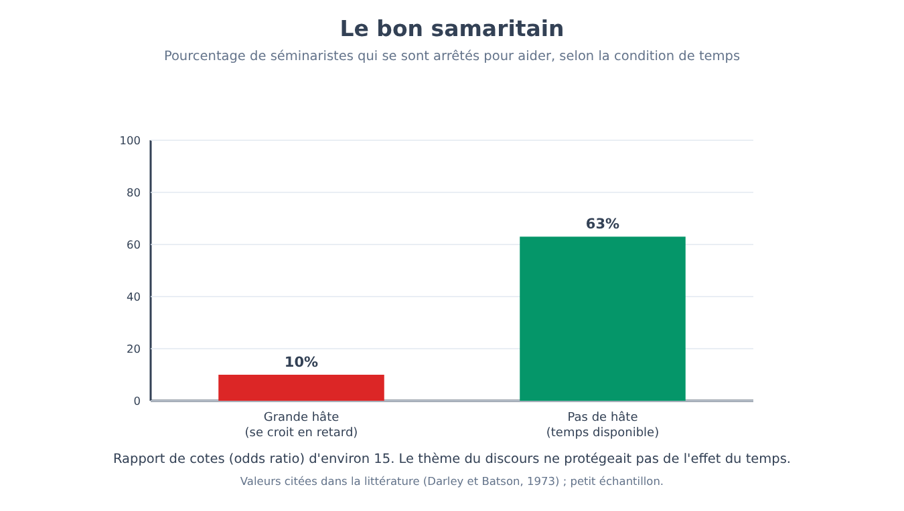
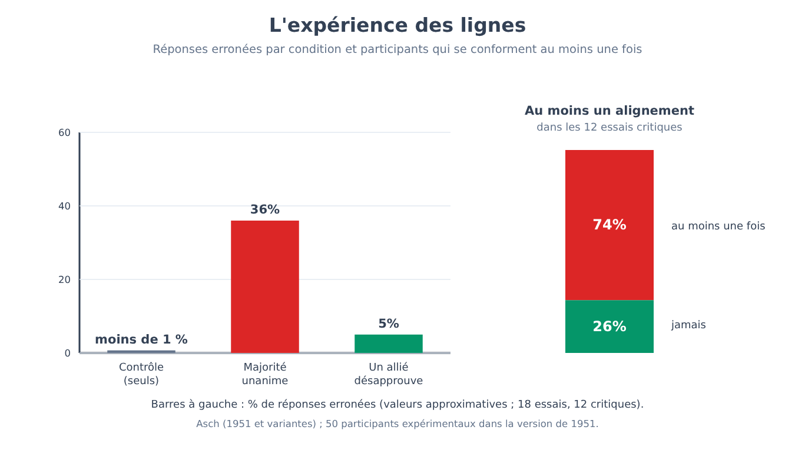
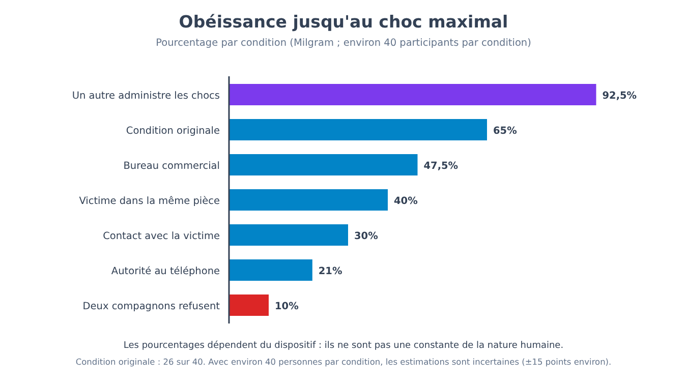
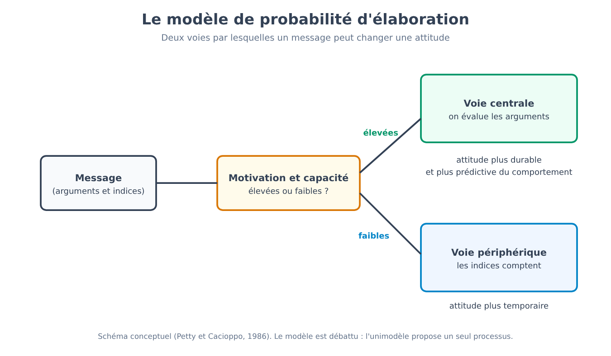
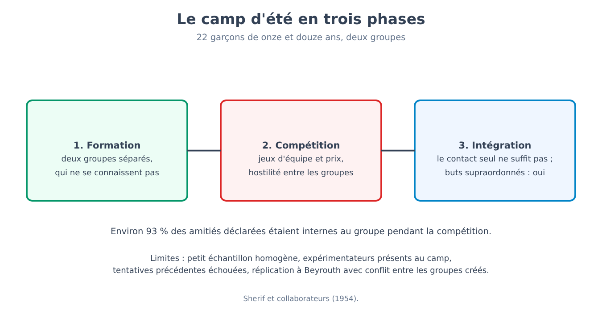
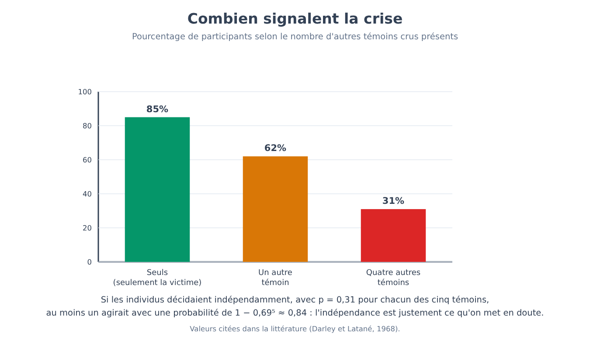

Partie XI. Psychologie sociale
Chapitre 66 — La situation plus forte que la disposition
[EN DEUX MOTS]
Lorsque nous voyons quelqu'un mal se comporter, nous tendons à penser qu'il est ainsi fait ; la psychologie sociale a bâti une part considérable de son histoire en montrant que la situation pèse plus que nous ne le croyons. Ce chapitre expose la thèse, l'erreur d'attribution qui la motive, deux expériences emblématiques (l'une sur l'aide, l'autre sur la prison simulée), et les relit aujourd'hui : l'une tient moyennant des précautions, l'autre a été en grande partie revue à la baisse. La thèse qui en ressort est plus subtile que l'originale.
Le chapitre 63 s'était achevé sur une position intermédiaire : le comportement dépend de la personne, de la situation et de leur interaction. La partie qui commence ici prend la situation au sérieux. Elle demande quelles caractéristiques du contexte déplacent le comportement des gens ordinaires, par quelles expériences on l'a montré, et avec quel degré de certitude. La première étape consiste à comprendre pourquoi la question a été nécessaire : pourquoi, lorsque nous observons le comportement de quelqu'un, l'explication qui vient en premier concerne presque toujours la personne.
Pourquoi nous regardons la personne
Si une collègue répond sèchement à une question, l'explication qui se forme le plus vite est qu'elle est désagréable. Penser qu'elle a eu une matinée difficile, qu'elle était en retard pour une échéance ou que la question lui est parvenue à un mauvais moment demande une étape de plus. Pour cette tendance à expliquer le comportement d'autrui par des traits, des intentions et des attitudes, en sous-estimant la situation, Lee Ross (1977) proposa le nom d'erreur fondamentale d'attribution (fundamental attribution error). Il la définit comme le « fondement conceptuel » de la psychologie sociale, une expression que l'auteur de l'une des expériences dont il était parti jugea ensuite provocatrice et en partie trompeuse.
[LE PLAN DE L'EXPÉRIENCE]
L'expérience d'où tout part est celle d'Edward Jones et Victor Harris (1967). Les participants lisaient un essai en faveur de Fidel Castro ou contre lui, écrit par un étudiant, et devaient évaluer dans quelle mesure l'auteur était favorable à Castro. À une moitié des participants, on disait que l'auteur avait choisi librement la position à défendre ; à l'autre moitié, qu'elle lui avait été assignée par l'expérimentateur, à pile ou face. Le résultat attendu, lorsque le choix était libre, était que l'auteur de l'essai favorable apparaisse plus favorable à Castro que l'auteur de l'essai défavorable. Le résultat surprenant est que l'effet subsistait, atténué mais présent, même lorsque la position avait été assignée au hasard : ceux qui jugeaient ne parvenaient pas à ne pas attribuer à l'auteur une conviction sincère, alors qu'ils savaient que cet auteur n'avait pas choisi ce qu'il écrivait.
L'expérience est un bon exemple de la façon dont on étudie une erreur : on construit une situation dans laquelle la réponse correcte est connue (la position avait été assignée au hasard, donc l'essai dit peu de chose de l'auteur) et l'on observe si les participants l'utilisent. Le résultat ne dit pas pour autant que les gens ignorent toujours la situation : il dit que, dans ces conditions, ils lui accordent moins de poids que la logique ne l'exigerait.
[QUESTION CONTROVERSÉE]
Le concept a connu une histoire plus mouvementée que son succès populaire. Une critique distingue deux choses souvent confondues : la tendance à expliquer le comportement par des dispositions (l'erreur d'attribution au sens strict) et celle à inférer une disposition à partir d'un comportement qui pourrait dépendre de la situation (ce qu'on appelle le biais de correspondance). Une revue de Bertram Malle (2006) a trouvé peu de soutien pour la première forme, tandis que la seconde tient mieux. D'autres auteurs (Walker, Smith et Vul, 2015) soutiennent que de nombreux résultats ont été interprétés comme des erreurs seulement parce qu'ils étaient comparés à un modèle de rationalité inadapté. L'universalité est elle aussi discutée : le biais de correspondance apparaît dans des cultures différentes, mais il est plus marqué dans les sociétés individualistes, et les enfants élevés en Inde tendent à accorder plus de poids à la situation que leurs pairs américains. La tendance à regarder la personne est réelle ; son ampleur, sa forme et son caractère d'« erreur » font l'objet de discussions.
Le bon Samaritain
[LE PLAN DE L'EXPÉRIENCE]
Dans l'étude de John Darley et Daniel Batson (1973), des étudiants d'un séminaire de théologie étaient invités à enregistrer un bref discours dans un autre bâtiment du campus. À certains était assigné comme thème la parabole du bon Samaritain, celle de l'homme qui s'arrête pour aider un inconnu blessé ; à d'autres, un thème différent. Avant de partir, les participants recevaient une indication sur le temps : certains entendaient qu'ils étaient déjà en retard, d'autres qu'il leur restait quelques minutes, d'autres qu'ils avaient du temps en plus. Sur le trajet, ils trouvaient, assis dans une ruelle, la tête baissée, toussant et gémissant, un homme (un complice) apparemment en détresse. La variable mesurée était de savoir s'ils s'arrêtaient, et comment. Avant l'expérience, des mesures de religiosité avaient aussi été recueillies, pour voir si elles prédisaient l'aide.
Les résultats comptent parmi les plus cités de la psychologie sociale : 10 % de ceux qui étaient très en retard s'arrêtèrent pour offrir leur aide, contre 63 % de ceux qui n'étaient pas pressés. Le thème du discours ne protégeait pas de façon fiable contre l'effet de la hâte : ceux qui allaient parler du Samaritain s'arrêtèrent un peu plus souvent (53 % contre 29 %), mais avec 40 participants la différence n'était pas statistiquement significative, alors que l'effet de la hâte l'était.
[FORMULE]
L'effet d'une condition sur la probabilité d'aider peut s'exprimer par le rapport de cotes (odds ratio), qui compare les probabilités dans deux groupes en tenant compte de leur éloignement des extrêmes :
OR = [p₁ / (1 − p₁)] / [p₂ / (1 − p₂)]
Où :
• p₁ est la proportion de personnes qui aident dans la condition de comparaison (aucune hâte) ;
• p₂ est la proportion de personnes qui aident dans l'autre condition (forte hâte) ;
• p / (1 − p) est la cote (odds) : le rapport entre la probabilité d'aider et celle de ne pas aider ;
• OR vaut 1 si les deux conditions ne diffèrent pas, et il est d'autant plus grand que 1 que la première condition favorise davantage l'aide.
Exemple de calcul. Avec p₁ = 0,63 et p₂ = 0,10 : cote dans la condition sans hâte = 0,63 / 0,37 ≈ 1,70 ; cote dans la condition de hâte = 0,10 / 0,90 ≈ 0,11. Le rapport est OR ≈ 1,70 / 0,11 ≈ 15. Pour ceux qui ne sont pas pressés, les chances relatives d'aider plutôt que de ne pas aider sont environ quinze fois plus élevées. Un effet aussi grand dans un petit échantillon doit être lu avec la prudence du chapitre 5 : les effets estimés sur peu de participants tendent à diminuer dans les réplications.

Que dit le résultat ? Une lecture est que la hâte rend les gens indifférents aux autres. Les auteurs eux-mêmes proposent une lecture différente, plus exacte par rapport à ce que le plan permet d'affirmer : ceux qui étaient en retard vivaient un conflit entre l'engagement pris envers l'expérimentateur et le besoin de l'inconnu, et, dans cette condition, ils donnaient la priorité à l'engagement. Dans les deux lectures, l'explication se trouve dans la situation et non dans un manque de bonté de la personne : un séminariste en retard n'est pas plus mauvais que le même séminariste disposant de temps.
Il faut dire que l'étude a des limites. L'échantillon était petit (quelques dizaines de séminaristes), un seul contexte et un seul type d'aide, et les mesures de personnalité recueillies n'avaient pas permis de prédire l'aide mieux que la situation. Que la situation ait, dans certains contextes, un effet puissant est un résultat solide ; que la hâte ait toujours un effet de cette ampleur n'est pas démontré.
[IDÉE REÇUE]
« Celui qui passe à côté d'une personne en difficulté sans s'arrêter est une personne insensible. » Le résultat de Darley et Batson montre que la même personne peut aider ou ne pas aider selon le temps dont elle pense disposer. Dire que celui qui ne s'arrête pas est insensible est une explication dispositionnelle d'un comportement qui, dans cette étude, dépendait visiblement de la situation. Cela ne signifie pas qu'il n'existe pas de différences entre les personnes dans la disposition à aider, mais qu'à partir d'un comportement unique dans une situation, la conclusion sur le caractère est bien moins solide qu'il n'y paraît.
La prison simulée
[LE PLAN DE L'EXPÉRIENCE]
Dans l'expérience de Philip Zimbardo et de ses collègues (1971, connue sous le nom d'expérience de la prison de Stanford), 24 étudiants de sexe masculin furent sélectionnés parmi 75 candidats qui avaient répondu à une annonce pour une étude sur la « vie carcérale » d'une durée prévue d'une ou deux semaines, avec une rémunération journalière. L'attribution du rôle de gardien ou de prisonnier fut aléatoire. Dans le sous-sol d'un bâtiment universitaire, une fausse prison avait été aménagée ; les gardiens portaient des uniformes et des lunettes sombres réfléchissantes et recevaient une consigne générale : maintenir l'ordre sans recourir à la violence physique. Les prisonniers étaient « arrêtés » à leur domicile, identifiés par un numéro et enfermés. L'étude fut interrompue après six jours, au lieu des deux semaines prévues, parce que le comportement des gardiens et les réactions des prisonniers étaient devenus préoccupants. Selon les comptes rendus, certains gardiens devenaient de plus en plus humiliants et certains prisonniers montraient des signes d'effondrement émotionnel, au point que l'un d'eux fut libéré après environ trente-six heures.
Pendant des décennies, l'étude a été présentée comme la démonstration qu'une situation, et en particulier un rôle aux pouvoirs asymétriques, transforme des personnes ordinaires en personnes cruelles. La lecture actuelle est beaucoup plus prudente, pour des raisons qui tiennent au plan lui-même.
[TIENT-ON ENCORE ?]
Les objections sont au nombre de quatre. La première concerne les caractéristiques de la demande (demand characteristics), c'est-à-dire les indices par lesquels une situation expérimentale suggère aux participants ce que l'on attend d'eux : dès 1975, Carlo Banuazizi et Siamak Movahedi soutenaient que les participants savaient ce que l'on attendait d'eux et se comportaient en conséquence. La deuxième concerne les instructions données aux gardiens : d'après les enregistrements et les témoignages (Thibault Le Texier, 2018 et 2019), les gardiens furent incités à être « durs », ce qui fait du comportement le résultat d'une demande et non d'un glissement spontané dans le rôle. La troisième concerne la sélection : l'annonce parlait de vie carcérale, et une étude (Carnahan et McFarland, 2007) a trouvé qu'une annonce de ce type attire des personnes présentant des traits plus agressifs et autoritaires qu'une annonce générique. La quatrième concerne la reproductibilité : il n'existe pas de réplication directe, l'échantillon est petit, il n'y a pas de condition de contrôle, et la taille de l'effet n'est pas quantifiable. Les auteurs et quelques collègues ont répliqué, dans une déclaration commune de 2018, que l'étude conserve sa validité ; dans la discussion reste ouverte en particulier la question de savoir dans quelle mesure le comportement des gardiens a été spontané.
Un test indirect est venu d'une tentative de réplication partielle, diffusée à la télévision et étudiée par Alexander Haslam et Stephen Reicher (l'étude de la prison de la BBC, publiée en 2006), dans laquelle les gardiens ne reçurent aucune indication sur la façon de se comporter. Le résultat fut différent : les participants ne se laissèrent pas glisser mécaniquement dans les rôles assignés, et l'émergence de comportements tyranniques dépendit de la façon dont le groupe s'identifia aux rôles et de qui exerça le leadership. Les auteurs en ont tiré la thèse que les gens n'obéissent pas passivement à un rôle mais s'identifient à un groupe et à celui qui le dirige. Ceci aussi est une interprétation, et le plan, de par sa nature télévisuelle, n'échappe pas aux critiques.
[ATTENTION AU SAUT LOGIQUE]
Du fait que, dans une situation construite de toutes pièces, certaines personnes ont montré des comportements cruels, il ne s'ensuit pas que n'importe qui, placé dans la même situation, les montrerait, ni que la situation seule suffise à les produire. De l'observation qu'un rôle puisse s'accompagner de certains comportements, il ne s'ensuit pas qu'il les cause : dans l'étude de Stanford, les instructions, les attentes et la sélection sont des variables confondues avec le rôle. Le saut le plus courant va de l'expérience de laboratoire au jugement moral sur des cas réels de violence institutionnelle : l'expérience de Stanford n'est pas la preuve qui explique, par exemple, comment se produisent les abus dans les vraies prisons.
Ce qu'il reste de la thèse
Après ces lectures, la thèse originelle doit être reformulée. Elle ne tient pas dans sa forme forte, selon laquelle les situations déterminent le comportement et les personnes comptent peu : l'expérience du Samaritain montre un grand effet de la hâte, mais ne quantifie pas l'effet des différences entre personnes, qui au chapitre 63 présentaient des corrélations du même ordre que bien des effets situationnels. Elle tient dans une forme plus modeste : les situations ont des effets substantiels, souvent sous-estimés par celui qui observe, et des mécanismes comme le conflit entre engagements, l'identification à un groupe et les demandes d'une autorité produisent des effets que l'on ne prévoit pas à partir des seuls traits. Les trois chapitres suivants montrent combien pèse en pratique l'influence des autres sur le comportement : le conformisme (chapitre 67), l'obéissance (chapitre 68) et la dissonance entre ce que nous faisons et ce que nous pensons (chapitre 69). Le chapitre 72 reviendra sur l'aide et sur les comportements de groupe.
D'un point de vue méthodologique, ce chapitre contient aussi une consigne pour le reste de la partie : les expériences les plus célèbres de la psychologie sociale sont souvent celles qui reposent sur de petits échantillons, des situations construites et des résultats forts, c'est-à-dire les conditions dans lesquelles, d'après le chapitre 5, un effet a plus de chances d'être surestimé. Cela ne les rend pas fausses, et leur importance historique n'est pas en cause ; cela veut dire que la bonne façon de les lire est de le faire avec les données plus récentes.
[CHIFFRES]
• 10 % contre 63 % : personnes qui s'arrêtèrent pour aider, respectivement sous forte hâte et sans hâte (Darley et Batson, 1973) ; rapport de cotes d'environ 15.
• 24 sur 75 : étudiants sélectionnés parmi les candidats pour l'étude de Stanford ; durée prévue d'une ou deux semaines, interrompue après six jours.
• Aucun chiffre de taille d'effet n'est disponible pour l'étude de Stanford : il manque une comparaison avec une condition de contrôle.
[MINI-CHRONOLOGIE]
• 1967 : Jones et Harris, l'essai sur Castro.
• 1971 : expérience de la prison de Stanford.
• 1973 : le bon Samaritain (Darley et Batson).
• 1977 : Ross forge l'expression « erreur fondamentale d'attribution ».
• 2006 : étude de la prison de la BBC (Haslam et Reicher) ; revue de Malle sur l'asymétrie acteur-observateur.
• 2018-2019 : Le Texier remet en question le récit classique de l'étude de Stanford.
[L'ESSENTIEL DU CHAPITRE]
• Nous tendons à expliquer le comportement d'autrui par des traits plutôt que par la situation (erreur fondamentale d'attribution, Ross, 1977) ; le concept est discuté, et la forme au sens strict a moins de soutien que le biais de correspondance.
• Dans l'étude de Jones et Harris (1967), les participants attribuaient à l'auteur d'un essai une conviction sincère même lorsque la position avait été assignée au hasard.
• Dans l'étude du bon Samaritain (Darley et Batson, 1973), 10 % de ceux qui étaient très en retard et 63 % de ceux qui n'étaient pas pressés aidèrent (rapport de cotes d'environ 15) ; l'effet du thème du discours n'était pas statistiquement significatif. L'échantillon était petit (40 séminaristes).
• L'expérience de Stanford (1971) ne tient pas comme démonstration que le rôle produit la cruauté : caractéristiques de la demande, instructions aux gardiens et sélection sont des variables confondues avec le rôle, et il manque une réplication directe.
• La thèse tient sous une forme modeste (les situations pèsent et sont sous-estimées) et non sous une forme forte (les personnes comptent peu).
Chapitre 67 — Conformisme
[EN DEUX MOTS]
Dans quelle mesure changeons-nous ce que nous disons, ou ce que nous croyons, parce que d'autres disent le contraire ? Ce chapitre expose les deux expériences qui ont défini le problème (l'une sur un jugement ambigu, l'autre sur un jugement évident), les facteurs qui augmentent ou réduisent le conformisme, la distinction entre deux types d'influence, et ce qui est resté après les réplications et les comparaisons entre époques et cultures. La thèse est moins sombre que la façon dont on la raconte d'habitude.
Imagine que tu es dans une pièce avec sept autres personnes, devant deux cartons : sur l'un il y a une ligne, sur l'autre trois lignes de longueurs différentes, et tu dois dire laquelle des trois est égale à la première. La tâche est si facile que n'importe qui, seul, répond juste presque toujours. Puis, l'un après l'autre, les sept qui te précèdent donnent la même réponse, et cette réponse est manifestement fausse. Que fais-tu ? La question, posée ainsi, divise ceux qui l'entendent : presque tous sont certains qu'ils diraient ce qu'ils voient. Les données racontent un tableau plus nuancé, et pour le comprendre il convient de partir d'une tâche dans laquelle le jugement juste n'existe pas.
Quand on ne sait pas que penser : la norme qui naît dans le groupe
[LE PLAN DE L'EXPÉRIENCE]
Muzafer Sherif (1935) exploita un phénomène perceptif : dans une pièce complètement obscure, un point lumineux fixe semble bouger (effet autocinétique), alors qu'il ne bouge pas du tout. On demandait aux participants d'estimer, à voix haute, de combien le point s'était déplacé. Seul, chacun développait son propre intervalle d'estimations, stable mais différent de celui des autres. Puis les participants étaient réunis en petits groupes et répétaient la tâche en énonçant les estimations à voix haute, en présence des autres. Dans ces conditions, les estimations des membres convergeaient vers une valeur commune, que le groupe élaborait de lui-même. Dans d'autres versions, ceux qui avaient d'abord fait la tâche en groupe puis seuls conservaient l'estimation du groupe et ne revenaient pas à la leur.
La tâche est construite de façon que personne ne puisse avoir raison : le point ne bouge pas, donc toute estimation est arbitraire. Lorsque la réalité n'offre pas de critère, les gens utilisent les autres comme source d'information, et le résultat est la naissance d'une norme sociale (social norm), c'est-à-dire une règle partagée sur ce que l'on juge approprié ou correct. Une question reste ouverte : que se passe-t-il lorsqu'un critère existe, et que les autres le contredisent ?
Quand on sait que penser : les lignes
[LE PLAN DE L'EXPÉRIENCE]
Dans l'expérience de Solomon Asch (1951, avec des variantes en 1955 et en 1956), un groupe d'étudiants de sexe masculin d'un college était invité à participer à une épreuve de « perception visuelle ». Dans chaque groupe, il n'y avait qu'un seul participant naïf ; les autres, environ sept, étaient des complices de l'expérimentateur. À chaque essai, le groupe voyait une ligne de référence et trois lignes de comparaison, dont l'une était identique à la première ; les autres en différaient de façon évidente. Chacun devait dire à voix haute laquelle c'était, à tour de rôle, le participant naïf étant presque toujours parmi les derniers à répondre. Les essais étaient au nombre de dix-huit : dans douze d'entre eux (les essais critiques), les complices donnaient, tous ensemble, la même réponse fausse, convenue à l'avance. Un groupe de contrôle, dans lequel les participants répondaient seuls ou sans pression, montrait combien la tâche était facile : les erreurs étaient inférieures à un pour cent. Les participants expérimentaux étaient au nombre de 50 dans la version de 1951.
Dans les essais critiques, les participants s'alignèrent sur la réponse fausse du groupe dans un peu plus d'un tiers des réponses (les sources rapportent des valeurs comprises entre 35 et 37 % selon la version). 74 % d'entre eux, soit près de trois sur quatre, s'alignèrent au moins une fois dans les douze essais critiques. 26 % ne le firent jamais, et environ 12 % s'alignèrent dans presque tous les essais. Les entretiens ultérieurs indiquaient des motivations différentes : certains participants disaient avoir douté de leur propre vue ; d'autres savaient avoir vu juste et s'étaient alignés pour ne pas se distinguer.
[IDÉE REÇUE]
« Asch a démontré que la plupart des gens plient devant la majorité. » Les données ne le disent pas. Dans deux réponses sur trois, les participants donnèrent la bonne réponse malgré l'unanimité des autres, et plus d'un sur quatre ne s'aligna jamais. Ce que les données montrent est autre chose : dans une tâche où se tromper était évident, une pression sociale réduite à l'os (des inconnus, sans récompenses ni sanctions) suffisait à faire donner une réponse fausse à près de trois personnes sur quatre, au moins une fois. La différence entre « la plupart plient toujours » et « presque tous plient quelquefois » est la différence entre une image fausse et une image vraie.
[FORMULE]
Si chaque personne avait la même probabilité p de s'aligner à chaque essai, et si les essais étaient indépendants, la probabilité de s'aligner au moins une fois en n essais critiques serait :
P(au moins une fois) = 1 − (1 − p)ⁿ
Où :
• p est la probabilité de s'aligner dans un seul essai critique ;
• 1 − p est la probabilité de répondre de façon indépendante dans cet essai ;
• n est le nombre d'essais critiques ;
• (1 − p)ⁿ est la probabilité de ne jamais s'aligner dans aucun des n essais, si les essais sont indépendants.
Exemple de calcul. Avec p = 0,36 et n = 12 : (1 − 0,36)¹² = 0,64¹² ≈ 0,005, donc P(au moins une fois) ≈ 1 − 0,005 = 0,995, soit environ 99,5 %. La valeur observée par Asch est en revanche de 74 %. La différence n'est pas une erreur de l'étude : elle dit que les personnes ne sont pas toutes semblables. Si certaines ne s'alignent jamais et d'autres presque toujours, la probabilité moyenne d'un tiers ne décrit personne en particulier, et l'hypothèse que chacun ait le même p tombe.

Deux façons d'être influencé
Morton Deutsch et Harold Gerard (1955) proposèrent de distinguer deux raisons pour lesquelles les autres nous influencent. L'influence informationnelle (informational influence) opère lorsque les autres sont une source d'information sur la réalité : si tous disent que le point s'est déplacé de quinze centimètres, ils ont probablement raison, ou du moins c'est ce qui m'aide à décider. L'influence normative (normative influence) opère lorsque je m'aligne pour être accepté par le groupe ou pour éviter le malaise de me distinguer, même sans croire que les autres aient raison. L'expérience de Sherif est surtout un cas du premier type : aucun critère externe, donc les autres sont la seule information. Celle d'Asch est surtout un cas du second : le critère existe et il est évident, et celui qui s'aligne le fait parce qu'il est mal à l'aise à l'idée de contredire sept personnes, non parce qu'il les croit. L'issue aussi reste distincte : on peut aligner son comportement sans changer d'opinion (alignement public), ou bien changer effectivement ce que l'on pense (acceptation privée). Asch a surtout observé le premier.
Ce qui fait augmenter et diminuer le conformisme
Asch lui-même fit varier les conditions, et ces variations sont la partie la plus instructive du travail. Le facteur le plus puissant est l'unanimité : il suffisait d'un seul complice donnant la bonne réponse pour que le nombre de réponses fausses baisse fortement, à environ 5 %. Un seul allié, même s'il n'était pas un expert, rendait beaucoup plus facile l'expression de son propre jugement. Le nombre de complices comptait aussi : avec un seul adversaire le conformisme était faible ; il augmentait sensiblement avec deux ou trois, et au-delà de trois il ne croissait plus. Le conformisme diminuait lorsque la réponse était écrite et non dite à voix haute, c'est-à-dire lorsque l'alignement n'était pas visible des autres. Et il dépendait de la difficulté de la tâche : plus le jugement était ambigu, plus l'influence des autres était grande.
[QUESTION CONTROVERSÉE]
Le conformisme change-t-il avec les époques et les cultures ? Une méta-analyse qui a rassemblé des études utilisant la tâche d'Asch dans différents pays (Bond et Smith, 1996) a rapporté un conformisme plus élevé dans les cultures qui valorisent davantage le groupe par rapport à l'individu, et une baisse au fil du temps dans les études américaines après les années 1950. Une réplication britannique avec des étudiants en ingénierie (Perrin et Spencer, 1980) a trouvé un conformisme pratiquement nul, et les auteurs l'ont mis en relation avec le contexte professionnel et historique des participants. Deux lectures sont possibles. L'une est que le conformisme change avec les valeurs de la société et avec les caractéristiques des participants. L'autre est que les résultats dépendent de détails du plan (comment les essais sont présentés, ce que l'on dit aux participants) et du fait que les études plus récentes sont moins nombreuses et moins uniformes. Les données ne permettent pas encore de trancher. Il faut garder à l'esprit que l'échantillon original était composé d'étudiants de sexe masculin de colleges américains.
Ce qui tient et ce qui ne tient pas
[TIENT-ON ENCORE ?]
Le fait central tient : une majorité unanime peut conduire une part non négligeable des personnes à déclarer, au moins une fois, un jugement qu'elles savent faux, et un seul dissident le réduit beaucoup. Ne tient pas la lecture selon laquelle les gens « suivent toujours la foule ». Il n'est pas démontré que l'effet ait la même ampleur aujourd'hui, dans d'autres cultures et dans des contextes aux conséquences réelles : le conformisme observé en laboratoire concerne une tâche sans importance, entre inconnus, sans aucun coût pour celui qui dissent.
[ATTENTION AU SAUT LOGIQUE]
Du fait que sept inconnus parviennent à faire se tromper dans une tâche de lignes, il ne s'ensuit pas que la même chose se produise pour des décisions importantes, avec des proches, ou dans une entreprise ou une école. La pression sociale réelle peut être plus forte (il y a un coût social à dissentir) ou plus faible (on a le temps de se confronter et de chercher un allié). Du fait que la majorité des jugements soit restée indépendante, il ne s'ensuit pas non plus que le conformisme soit rare : la question change selon que l'on regarde la réponse isolée ou la personne.
Le conformisme n'est pas toujours un défaut. Suivre les indications des autres est souvent un moyen efficace d'obtenir des informations correctes, et l'expérience de Sherif montre comment naît une convention commune. Le problème que fait voir l'expérience d'Asch est le cas où le jugement personnel est juste et où le groupe se trompe, et ce qui sert à corriger l'erreur est, d'après le résultat sur les variantes, un seul allié. Le prochain chapitre passe d'un groupe de pairs à une autorité : de celui qui dit quelque chose à celui qui donne un ordre.
[CHIFFRES]
• 50 participants expérimentaux (1951) ; 18 essais, dont 12 critiques ; environ sept complices par groupe.
• Moins de 1 % d'erreurs dans le contrôle ; un peu plus d'un tiers (35-37 %) de réponses conformes dans les essais critiques.
• 74 % s'alignent au moins une fois ; 26 % jamais ; environ 12 % presque toujours.
• Environ 5 % de réponses conformes avec un allié qui donne la bonne réponse.
• Le modèle à probabilité constante prévoirait environ 99,5 % d'alignement au moins une fois (exemple) : la valeur observée est de 74 %.
[MINI-CHRONOLOGIE]
• 1935 : Sherif et la norme dans l'effet autocinétique.
• 1951 : Asch et la tâche des lignes (variantes en 1955 et 1956).
• 1955 : Deutsch et Gerard distinguent influence informationnelle et normative.
• 1980 : réplication britannique avec un conformisme quasi nul.
• 1996 : méta-analyse de Bond et Smith sur les cultures et les années.
[L'ESSENTIEL DU CHAPITRE]
• Lorsqu'il n'existe pas de critère (effet autocinétique, Sherif, 1935), les estimations des participants convergent vers une norme de groupe.
• Dans l'expérience des lignes (Asch, 1951), environ un tiers des réponses aux essais critiques était conforme et 74 % des participants s'alignèrent au moins une fois ; 26 % jamais, et deux réponses sur trois restaient indépendantes.
• Avec une probabilité constante p ≈ 0,36 et douze essais, s'aligner au moins une fois serait presque certain (1 − (1 − p)ⁿ ≈ 99,5 %) : les 74 % observés montrent les différences individuelles.
• L'influence est informationnelle (les autres sont une source d'informations) ou normative (on cherche l'acceptation) ; on peut aligner son comportement sans changer d'opinion.
• Un seul allié réduit beaucoup le conformisme ; l'effet croît jusqu'à environ trois personnes puis s'arrête ; la réponse privée le réduit.
• Les différences entre cultures et époques et une réplication à conformisme nul montrent que l'effet dépend du contexte ; l'échantillon était composé d'étudiants américains de sexe masculin.
Chapitre 68 — Obéissance
[EN DEUX MOTS]
Des personnes ordinaires, dans un laboratoire universitaire, ont continué à infliger des chocs de plus en plus forts à un inconnu parce qu'un chercheur le leur demandait. Ce chapitre expose le plan en détail, les résultats pour chaque condition, les objections sur la validité et sur l'éthique, ce que rapportent les relectures des archives, et ce que l'on peut encore soutenir. Il tient la promesse sur la validité écologique (chapitre 3) et applique au cas les critères de reproductibilité du chapitre 5.
Demande à n'importe qui pourquoi des personnes ordinaires ont infligé de la souffrance à un inconnu uniquement parce qu'un homme en blouse grise le demandait, et tu entendras presque toujours la même réponse : elles devaient être particulièrement cruelles ou particulièrement faibles. La réponse rassure, parce qu'elle laisse intacte l'idée que nous, à leur place, nous nous serions comportés autrement. Le problème est que les données de l'expérience originale ne confirment pas que ces personnes aient été inhabituelles : elles avaient été recrutées par une annonce, sans autres critères. Si l'explication ne tient pas au caractère de ceux qui obéissent, elle doit se trouver ailleurs. Pour comprendre où, il faut voir comment l'expérience était faite, parce que chaque mot du plan compte.
Le plan original
[LE PLAN DE L'EXPÉRIENCE]
Dans l'expérience de Stanley Milgram (1963), menée à l'Université Yale, 40 hommes âgés de vingt à cinquante ans, recrutés par une annonce pour une étude sur la « mémoire et l'apprentissage », se présentaient au laboratoire en couple avec un autre « participant », en réalité un complice. Par un tirage au sort truqué, le vrai participant se voyait toujours attribuer le rôle d'« enseignant » et le complice celui d'« élève ». L'élève était attaché à une chaise dans une pièce voisine, avec des électrodes aux poignets, tandis que l'enseignant, dans une autre pièce, était assis devant un générateur de chocs à trente interrupteurs, de 15 à 450 volts, avec des étiquettes allant de « choc léger » à « danger : choc grave » et, pour les deux derniers, à un simple « XXX ». La tâche de l'enseignant était de lire des paires de mots et d'administrer un choc, plus fort à chaque erreur. L'élève, suivant un scénario, se trompait souvent et protestait de façon de plus en plus intense ; à un certain niveau, il frappait contre la paroi, puis ne répondait plus. Si l'enseignant hésitait, l'expérimentateur, en blouse grise, répondait par quatre phrases dans un ordre fixe : « Continuez, s'il vous plaît » ; « L'expérience exige que vous continuiez » ; « Il est absolument indispensable que vous continuiez » ; « Vous n'avez pas le choix, vous devez continuer ». Après le quatrième refus, l'expérience prenait fin. Aucune contrainte ni menace n'était exercée. Aucun choc n'était réellement administré.
Avant l'expérience, on demanda à un groupe de personnes compétentes (dont des psychiatres) de prévoir combien de participants atteindraient le choc maximal : les estimations indiquaient une fraction minime, de l'ordre de quelques cas pathologiques. Le résultat fut très différent. Les quarante participants atteignirent tous 300 volts ; 26 sur 40, soit 65 %, allèrent jusqu'au dernier interrupteur, celui de 450 volts. Beaucoup montraient une forte tension : ils transpiraient, tremblaient, riaient nerveusement, protestaient, mais continuaient.
Les conditions expérimentales
Milgram ne s'en tint pas à la version originale : il mena une vingtaine de variantes, chacune modifiant un seul aspect du plan, toutes avec des échantillons d'une quarantaine de personnes. Ces variantes sont la partie la plus instructive du travail, parce qu'elles montrent de quoi dépend l'obéissance.

Dans la condition où l'expérimentateur donnait les instructions par téléphone et n'était pas présent, environ 21 % obéirent. Lorsque l'élève se trouvait dans la même pièce, l'obéissance descendit à 40 % ; lorsque l'enseignant devait presser la main de l'élève sur une plaque pour délivrer le choc, à 30 %. Lorsque l'expérience se déroulait dans un bureau commercial plutôt qu'à Yale, on observa 47,5 %, une différence non significative par rapport à la condition originale. Deux variations montrent l'effet des autres : lorsque deux compagnons (complices) refusaient de continuer pendant l'expérience, l'enseignant alla jusqu'au bout dans seulement 4 cas sur 40, soit 10 %. Lorsque, en revanche, un autre « enseignant » (complice) exécutait matériellement les chocs et que le participant se bornait à lire les mots et à enregistrer les réponses, presque tous, 37 sur 40, restèrent jusqu'à la fin.
[FORMULE]
Une obéissance de 65 % sur 40 personnes est une estimation, et doit être accompagnée de son incertitude. L'erreur standard d'une proportion mesure de combien la proportion observée peut varier par le seul effet de l'échantillon :
ES = √[ p̂ · (1 − p̂) / n ]
D'où un intervalle de confiance à 95 % approximatif (comme au chapitre 4) : p̂ ± 1,96 · ES
Où :
• p̂ (p avec un chapeau) est la proportion observée dans l'échantillon ;
• n est le nombre de participants ;
• ES est l'erreur standard ;
• 1,96 est la valeur qui laisse en dehors 5 % des cas, la moitié de chaque côté, dans une distribution en cloche.
Exemple de calcul. Avec p̂ = 26/40 = 0,65 et n = 40 : ES = √(0,65 · 0,35 / 40) = √0,00569 ≈ 0,075. L'intervalle est 0,65 ± 1,96 · 0,075 = 0,65 ± 0,15, soit d'environ 0,50 à 0,80. L'obéissance dans cette condition, dans la population dont proviennent les 40, est plausiblement comprise entre 50 % et 80 %. Pour la variante du bureau commercial (19 sur 40, soit 47,5 %), l'intervalle est d'environ 0,32-0,63 : les deux intervalles se recouvrent largement, et cela explique pourquoi la différence de 17,5 points n'est pas significative (une comparaison directe entre les deux proportions donne le même résultat : z ≈ 1,6, p ≈ 0,11).
Ce qui explique l'obéissance
Milgram proposa de l'expliquer par l'état agentique (agentic state) : une personne qui se met au service d'une autorité légitime cesse de se sentir responsable de ses propres actions et se considère comme un instrument de celui qui commande. Les variantes semblent compatibles avec cette idée : l'obéissance diminuait lorsque l'autorité était éloignée ou que son rôle était mis en question (les deux compagnons qui refusaient) et lorsque la victime était plus proche. Reste toutefois un problème, que les analyses les plus récentes ont mis en lumière.
Alexander Haslam, Stephen Reicher et leurs collègues ont analysé les enregistrements et les variantes, et ont remarqué que les quatre phrases de l'expérimentateur n'avaient pas le même effet. Les phrases qui sonnaient comme des ordres directs (« Vous n'avez pas le choix, vous devez continuer ») réduisaient l'obéissance, tandis que celles qui rappelaient l'importance de l'expérience pour la science (« L'expérience exige que vous continuiez ») l'augmentaient. S'il avait suffi d'un ordre pour produire l'obéissance, c'est le contraire qui serait arrivé. La lecture proposée, appelée adhésion participative (engaged followership), est que les participants continuaient non pour obéir à un ordre mais parce qu'ils s'identifiaient au projet scientifique et à celui qui le représentait, convaincus de contribuer à une cause qu'ils jugeaient valable.
[QUESTION CONTROVERSÉE]
Obéissance à une autorité ou identification à une cause ? Dans la lecture classique, le participant cède la responsabilité à celui qui commande. Dans la lecture de Haslam et Reicher, le participant s'engage activement pour un objectif qu'il partage, et la personne qui commande est le représentant de cette valeur. Les deux lectures prévoient des comportements différents : la première, que les phrases les plus autoritaires fonctionnent mieux ; la seconde, que fonctionnent mieux celles qui rappellent le but. Les données sur les quatre phrases sont plus proches de la seconde. Il n'en découle pas pour autant que la première soit à écarter entièrement : les variantes sur la présence et sur la distance de l'autorité sont compatibles avec les deux, et la reconstruction du processus psychologique à partir des seuls résultats comportementaux reste incertaine.
La validité : ce que l'on a vu dans les archives
Le chapitre 3 avait laissé ouverte la question de la validité écologique (3 → 68) : un résultat obtenu dans un laboratoire construit de toutes pièces s'applique-t-il à la vie réelle ? Pour l'expérience de Milgram, la question a deux versions. La première est de savoir si les participants croyaient que les chocs étaient réels. La seconde est de savoir si l'obéissance à un scientifique dans un laboratoire dit quelque chose de l'obéissance hors du laboratoire.
Sur la première, une relecture des archives de Milgram par Gina Perry (2012) a rapporté que seulement environ la moitié des participants croyaient pleinement à la procédure, et que, parmi ceux qui y croyaient, environ deux tiers (66 %) avaient désobéi. Si ce chiffre tient, le pourcentage classique aurait été gonflé par les participants qui soupçonnaient la mise en scène. Ce chiffre est une lecture de matériel d'archives par une seule autrice, dans laquelle la classification de ceux qui « croyaient » est elle-même une interprétation, et il n'a pas été confirmé de façon indépendante. Milgram lui-même avait demandé aux participants, à la fin de l'étude, dans quelle mesure ils avaient cru à la procédure, et avait rapporté qu'une part consistante, mais pas la totalité, déclarait y avoir cru ; les deux comptes rendus diffèrent dans l'interprétation de ce qui compte comme « croire », et il n'y a pas moyen de répéter la procédure pour trancher.
Sur la seconde, la littérature est divisée. L'étude montre que, dans une situation avec une autorité légitime, une demande graduelle et une victime non physiquement présente, beaucoup de personnes continuent. Elle ne montre pas que les gens obéissent passivement à n'importe quel ordre, ni que ce mécanisme explique à lui seul des comportements historiques comme ceux de ceux qui ont participé à des violences collectives : certains historiens et psychologues soutiennent que ceux qui ont commis des violences de masse agissaient aussi par conviction et par identification à un projet, ce qui est plus proche de la lecture de Haslam et Reicher.
[IDÉE REÇUE]
« Milgram a démontré que 65 % des gens obéissent à n'importe quel ordre, même cruel. » Les 65 % concernent une condition précise, avec 40 hommes, dans un laboratoire universitaire, avec un expérimentateur présent et proche. En changeant une variable, le pourcentage descendait à 21 %, à 10 % ou montait à 92 % (si ce n'était pas le participant qui pressait l'interrupteur). Les 65 % ne sont pas une constante de la nature humaine : c'est la valeur d'une configuration. Même dans cette configuration, environ un tiers n'alla pas jusqu'au bout.
L'éthique
L'expérience fut critiquée presque immédiatement. Diana Baumrind (1964) observa que les participants avaient été soumis à un fort stress émotionnel, trompés sur le but et sur la présence d'une victime réelle, et que le débriefing ne pouvait pas annuler l'expérience vécue. Milgram répondit qu'après l'expérience les participants avaient été informés et que, dans les questionnaires ultérieurs, la grande majorité avait déclaré être contente d'avoir participé. Le débat a eu un effet durable sur les normes : les comités d'éthique d'aujourd'hui n'approuveraient pas la procédure originale, ce qui empêche, de fait, une réplication directe.
Les réplications, à la lumière du chapitre 5
Le cas de Milgram met à l'épreuve les critères de reproductibilité du chapitre 5, parce que c'est une situation presque exemplaire : un résultat célèbre que personne ne peut répéter de la même façon. Une réplication partielle (Jerry Burger, 2009) a modifié le plan de façon à réduire le risque pour les participants : l'expérimentateur interrompait la procédure après l'interrupteur de 150 volts, le point où l'élève demandait pour la première fois à être libéré, et ce point était utilisé comme indicateur de ceux qui auraient continué. Ceux qui avaient dépassé 150 volts, dans le plan de Milgram, tendaient à aller jusqu'au bout. L'obéissance se révéla « virtuellement identique » à celle de l'étude originale jusqu'à ce niveau, y compris entre hommes et femmes. La lecture prudente est que l'effet de base se retrouve, avec les limites d'une procédure qui n'arrive pas jusqu'au bout et d'un échantillon différent ; elle ne résout pas la question des pourcentages exacts ni de l'interprétation.
Le tableau qui en ressort, selon les critères du chapitre 5, est le suivant. Le résultat qualitatif (une fraction consistante de personnes ordinaires continue, dans des conditions définies, à infliger un dommage à la demande d'une figure d'autorité) a été observé dans de nombreuses variantes et dans une réplication partielle. Les chiffres exacts ne peuvent pas être considérés comme stables : les échantillons étaient d'une quarantaine de personnes, les réplications directes manquent, et la lecture des archives met en doute une partie de l'échantillon. L'interprétation psychologique est l'aspect le moins certain.
[TIENT-ON ENCORE ?]
Tient : la conclusion qu'une autorité, même sans menaces, peut conduire des personnes ordinaires à infliger des dommages ; la dépendance de l'obéissance à la proximité, à la présence de l'autorité et au comportement des autres. Tient en partie : le pourcentage de 65 %, en raison des réserves sur la crédibilité et l'échantillon. Ne tient pas comme description complète : l'idée d'une obéissance passive et aveugle, parce que les données sur les quatre phrases indiquent un rôle de l'identification au but.
[ATTENTION AU SAUT LOGIQUE]
Des 65 % dans une condition de laboratoire, il ne s'ensuit pas que deux personnes sur trois commettraient des atrocités si une autorité le demandait. De l'obéissance en laboratoire, il ne s'ensuit pas que l'obéissance explique les comportements de ceux qui participent à des violences collectives. Et du fait qu'une étude ne soit pas reproductible aujourd'hui, pour des raisons éthiques, il ne s'ensuit pas que ses résultats soient faux : il s'ensuit que leur force doit être évaluée par d'autres moyens.
[CHIFFRES]
• 40 hommes ; tous à 300 volts ; 26 sur 40 (65 %) jusqu'à 450 volts ; intervalle de confiance à 95 % d'environ 0,50 à 0,80.
• Conditions : environ 21 % (téléphone), 40 % (même pièce), 30 % (contact), 47,5 % (bureau commercial), 10 % (deux compagnons refusent), 37 sur 40 (un autre exécute les chocs à la place du participant).
• Relecture des archives (Perry, 2012) : environ la moitié des participants croyaient pleinement à la procédure ; parmi eux, 66 % désobéirent.
[MINI-CHRONOLOGIE]
• 1963 : Milgram publie l'expérience de Yale.
• 1964 : Baumrind critique l'éthique de l'étude.
• Années 1970 : les normes sur la recherche avec des sujets humains rendent la procédure originale non répétable.
• 2009 : réplication partielle de Burger, avec interruption à 150 volts.
• 2012 : Perry publie la relecture des archives.
• Années 2010 : Haslam, Reicher et leurs collègues proposent la lecture en termes d'adhésion participative.
[L'ESSENTIEL DU CHAPITRE]
• Dans l'étude originale (Milgram, 1963), 40 hommes : tous arrivèrent à 300 volts et 26 sur 40 (65 %) à 450 volts ; l'intervalle de confiance à 95 % va d'environ 50 % à 80 %.
• L'obéissance dépendait de la condition : environ 21 % avec l'autorité au téléphone, 40 % avec la victime dans la même pièce, 10 % si deux compagnons refusaient, presque tous s'ils n'étaient pas ceux qui pressaient l'interrupteur.
• Les phrases les plus proches d'ordres réduisaient l'obéissance et celles qui rappelaient la science l'augmentaient : cela soutient la lecture selon laquelle les participants s'identifiaient au but, plus que la lecture de l'obéissance passive.
• Une relecture des archives (Perry, 2012) indique qu'environ la moitié des participants ne croyaient pas pleinement à la procédure, et que, parmi ceux qui y croyaient, 66 % désobéirent : donnée non confirmée de façon indépendante.
• Le plan n'est pas reproductible pour des raisons éthiques ; une réplication partielle (Burger, 2009) a trouvé des résultats semblables jusqu'à 150 volts.
• Le résultat qualitatif tient ; les pourcentages exacts et l'interprétation psychologique, non.
Chapitre 69 — Dissonance cognitive et autojustification
[EN DEUX MOTS]
Après avoir fait quelque chose qui ne correspond pas à ce que nous pensons, nous tendons à rapprocher nos convictions de ce que nous avons fait. Ce chapitre expose la théorie de la dissonance, l'expérience qui l'a rendue célèbre, deux autres paradigmes, les reformulations successives, ce qu'a trouvé une grande réplication multi-laboratoires de 2024, et le rapport de cette idée avec la rationalisation décrite par la psychanalyse. Il reprend les défenses décrites au chapitre 10 et tient la promesse ouverte par le chapitre 13.
Tu as beaucoup dépensé pour un objet qui se révèle médiocre : des vacances mal organisées, un cours trop cher. Dans les jours qui suivent, si quelqu'un t'en parle, tu remarques que tu lui trouves des qualités : « au fond l'endroit était calme », « j'ai appris plus qu'il n'y paraît ». Tu ne mens pas aux autres : il semble que tu te convainques aussi toi-même. La psychologie sociale a donné à cette tendance un nom et une théorie, et l'a soumise à des expériences. La théorie a une partie qui tient bien et une partie que les réplications les plus récentes ont remise en question, et les distinguer est le but du chapitre.
La théorie
Leon Festinger (1957) proposa que les gens tiennent, de façon implicite, un bilan de leurs cognitions, c'est-à-dire les convictions, les connaissances et les perceptions de soi et du monde, et que deux cognitions qui ne vont pas ensemble produisent un état désagréable, la dissonance cognitive (cognitive dissonance). « Je suis une personne honnête » et « je viens de dire un mensonge » sont dissonantes ; de même « fumer est mauvais pour la santé » et « je fume ». Selon la théorie, la dissonance est comme une tension qui pousse à la réduire, et on peut le faire de diverses manières : en changeant le comportement, en changeant l'une des deux convictions, en ajoutant une cognition qui les réconcilie (« fumer m'aide à gérer le stress »), ou en en réduisant l'importance (« le mensonge était petit »). La théorie prévoit en outre que la dissonance est d'autant plus forte que les cognitions impliquées sont importantes et que les dissonantes sont plus nombreuses que les consonantes.
[FORMULE]
Festinger proposa, comme modèle conceptuel et non comme mesure directe, que l'ampleur de la dissonance dépende du rapport entre les cognitions dissonantes et le total, chacune pondérée par son importance :
D = Σ (importance des dissonantes) / [Σ (importance des dissonantes) + Σ (importance des consonantes)]
Où :
• D est l'ampleur de la dissonance, entre 0 (aucune) et 1 (maximale) ;
• Σ indique la somme sur les cognitions de ce type ;
• les dissonantes sont les cognitions qui contredisent le comportement ou la conviction examinés ; les consonantes sont celles qui le soutiennent.
Exemple de calcul (avec des valeurs illustratives, attribuées par l'auteur pour montrer la logique). Une personne a dit un mensonge : la cognition dissonante (« j'ai menti ») a une importance de 4. Dans la condition A, il y a une cognition consonante, « on m'a payé un dollar », d'importance 1 : D = 4 / (4 + 1) = 0,80. Dans la condition B, la cognition consonante est « on m'a payé vingt dollars », d'importance 5 : D = 4 / (4 + 5) ≈ 0,44. À mensonge égal, une rémunération élevée réduit la dissonance, et une rémunération faible la laisse élevée. La formule n'a jamais été une mesure pratique : les « importances » ne se mesurent pas avec des unités communes, et c'est pourquoi la théorie a été mise à l'épreuve par des expériences et non avec cette équation.
L'expérience de la rémunération insuffisante
[LE PLAN DE L'EXPÉRIENCE]
Dans l'étude de Leon Festinger et James Carlsmith (1959), 71 étudiants de sexe masculin de Stanford (60 inclus dans l'analyse finale) exécutaient pendant environ une heure des tâches très ennuyeuses (par exemple tourner de façon répétée des chevilles sur une planchette). À la fin, l'expérimentateur expliquait que l'étude portait sur l'effet des attentes, et que le participant suivant, qui attendait dans la pièce voisine, devait être préparé à croire que la tâche était intéressante ; l'assistant habituellement chargé de le lui dire n'était pas disponible et demandait au participant de le faire. Le participant mentait donc à une personne qui se comportait comme un autre participant, mais qui était en réalité un complice. Pour ce service, la moitié des participants recevait un dollar, l'autre moitié vingt dollars ; un groupe de contrôle ne disait rien au prétendu participant. Lors d'un entretien final, mené par une personne différente et présentée comme indépendante, on demandait à tous d'évaluer à quel point ils avaient trouvé la tâche intéressante.
Le résultat est l'ordre, non une simple différence : ceux qui avaient reçu un dollar évaluaient la tâche comme plus intéressante que ceux qui avaient reçu vingt dollars, et ceux qui avaient reçu vingt dollars l'évaluaient à peine plus positivement que ceux qui n'avaient rien dit. L'interprétation de la théorie est que vingt dollars étaient une justification suffisante pour le mensonge : la dissonance était faible, et il n'était pas nécessaire de changer d'opinion. Un dollar était une justification insuffisante : la dissonance était élevée, et le moyen le plus simple de la réduire était de changer d'opinion sur la tâche (« au fond ce n'était pas si mal »). Le résultat est contre-intuitif, parce qu'il semble qu'une récompense moindre produise un changement plus grand, et c'est pour cela que l'expérience est devenue une référence.
Une explication alternative, proposée par Daryl Bem (1967), est la perception de soi (self-perception) : les gens déduisent leurs propres attitudes en observant leur propre comportement, comme le ferait un observateur externe, et un observateur dirait que celui qui a menti pour un dollar devait croire à ce qu'il disait. La théorie de Bem prévoit les mêmes résultats sans recourir à un état désagréable. La différence entre les deux tient à l'activation : la dissonance prévoit une tension, la perception de soi non, et quelques études ultérieures ont mesuré une augmentation de l'activation physiologique en condition de dissonance, ce qui soutient la première, sans toutefois trancher complètement.
Deux autres paradigmes
L'idée a aussi été testée dans d'autres situations. Dans le paradigme du libre choix, après avoir choisi entre deux objets de valeur semblable, les gens évaluent plus positivement l'objet choisi et moins bien celui qu'ils ont refusé qu'ils ne le faisaient auparavant, parce que chaque alternative refusée a des qualités qui entrent en dissonance avec la décision. Dans la justification de l'effort, Elliot Aronson et Judson Mills (1959) trouvèrent que des personnes soumises à une procédure d'entrée embarrassante pour entrer dans un groupe de discussion ennuyeux l'évaluaient comme plus intéressant que celles qui avaient subi une procédure légère : l'effort a un coût que l'on justifie en pensant que le résultat en vaut la peine. Ces deux paradigmes sont moins solides que leur renommée ne le ferait croire, et leurs résultats dans les répétitions ont fait l'objet de discussions.
Les reformulations
La théorie originale a reçu trois reformulations principales, qui en changent le cœur. Pour Aronson (1969), la dissonance ne naît pas d'une incongruité quelconque mais d'une menace pour l'image positive de soi : c'est le conflit entre « je suis une personne honnête » et « j'ai menti ». Pour Joel Cooper et Russell Fazio (années 1980), l'origine de la dissonance est le fait d'avoir causé des conséquences négatives : si le comportement n'a pas de conséquences désagréables, il n'y a pas de dissonance ; des études ultérieures ont trouvé de la dissonance même lorsque les participants croyaient n'avoir rien fait de mal, ce qui complique cette lecture. Pour Eddie Harmon-Jones, dans le modèle fondé sur l'action (avec Harmon-Jones et Levy, 2015), la dissonance naît lorsque les cognitions interfèrent avec un comportement orienté vers un but, et sert à rendre l'action possible. Une autre proposition, l'auto-affirmation (self-affirmation), soutient que la dissonance se réduit aussi en confirmant une autre valeur importante pour soi, sans changer l'opinion en question. Les quatre reformulations ne s'excluent pas, et chacune explique certains résultats mieux que les autres.
La réplication de 2024
[TIENT-ON ENCORE ?]
En 2024, David Vaidis, Willem Sleegers et leurs collègues ont publié une réplication constructive du paradigme de la compliance induite (induced compliance), c'est-à-dire celui dans lequel on induit une personne à se comporter à l'encontre de son opinion, avec près de 4 900 participants dans 39 laboratoires de 19 pays. Le plan ne copiait pas l'étude de 1959 : il reprenait, sous une forme actualisée, une étude de 1983 de Croyle et Cooper. Les participants, après avoir exprimé leur opinion sur quelques politiques universitaires, étaient informés qu'un comité examinait une augmentation des frais de scolarité, impopulaire parmi les étudiants. Certains devaient écrire un essai en faveur de l'augmentation (choix faible), d'autres pouvaient choisir de l'écrire (choix élevé), et un groupe de contrôle suggérait d'autres thèmes. Ceux qui écrivaient l'essai en faveur changeaient d'attitude plus que ceux qui écrivaient un essai neutre, ce qui soutient l'idée centrale : se comporter à l'encontre de son opinion conduit à la modifier. Mais ceux qui avaient choisi librement ne changeaient pas davantage que ceux qui avaient été orientés : l'effet du choix ne fut pas répliqué. Les auteurs en ont conclu que le paradigme ne fournit pas une preuve robuste de la dissonance comme mécanisme, et que la théorie doit être réévaluée.
La lecture prudente est la suivante. L'observation de base tient : après un comportement contraire à ses propres opinions, celles-ci tendent à se déplacer vers le comportement. Ne tient pas de façon solide l'ingrédient que la théorie considérait comme décisif, c'est-à-dire que le libre choix soit nécessaire ; et cela met en question l'explication et non le phénomène. Le phénomène pourrait dépendre d'autres mécanismes, comme la perception de soi ou l'ajustement des opinions par souci de cohérence, qui ne requièrent pas une tension désagréable.
[QUESTION CONTROVERSÉE]
Pourquoi l'opinion change-t-elle ? Pour la théorie de la dissonance, pour réduire un état désagréable ; pour la perception de soi, parce que les gens interprètent leur propre comportement ; pour d'autres lectures, parce que les gens veulent maintenir une image cohérente devant les autres, et non devant eux-mêmes. Les données disponibles, y compris les mesures d'activation physiologique et la réplication de 2024, sont compatibles avec plusieurs lectures et ne permettent pas d'en choisir une seule. Une donnée pertinente est que le résultat sur l'effet du choix, central dans la théorie, ne tient pas dans la plus ample réplication.
La rationalisation, et le rapport avec le chapitre 10
Le chapitre 10 avait présenté les défenses comme des instruments par lesquels l'esprit tient en respect ce qui n'est pas acceptable, et le chapitre 13, en faisant le bilan de la tradition psychanalytique, avait renvoyé à ce chapitre pour une comparaison (13 → 69). La rationalisation (rationalization), dans le langage psychanalytique, est la défense par laquelle on justifie par des motifs acceptables un comportement ou un désir dont les motifs réels sont inacceptables. Le parallèle avec la dissonance est évident : dans les deux cas, une personne se donne à elle-même une explication meilleure que la réelle.
Les différences sont au nombre de deux, et concernent la méthode plus que l'idée. La première est que la rationalisation psychanalytique est un processus inconscient lié à une pulsion refoulée, que l'on infère dans le traitement ; la dissonance est un processus que l'on étudie dans l'expérience, avec une manipulation (un dollar ou vingt) et une mesure (l'évaluation de la tâche), et qui ne demande pas de postuler une pulsion sous-jacente. La seconde est que la dissonance a produit des prévisions contre-intuitives et vérifiables, parmi lesquelles celle que la rémunération moindre produirait le plus grand changement, et que l'on a pu mettre à l'épreuve, jusqu'à en voir tomber une partie. Cela ne rend pas la psychanalyse fausse, ni la dissonance sa traduction : cela signale que deux traditions, parties de points différents et avec des méthodes différentes, ont décrit une tendance semblable, et que seule l'une des deux l'a soumise à des expériences reproductibles.
Il y a enfin une comparaison avec un résultat déjà rencontré. Le chapitre 52 a décrit l'effet de surjustification : une récompense promise pour une activité déjà plaisante réduit l'intérêt pour l'activité. Cela semble l'opposé de la dissonance, où une récompense faible augmente l'intérêt pour une tâche ennuyeuse. Les deux situations diffèrent : dans le premier cas, l'activité plaisait déjà et la récompense offre une explication alternative de son propre comportement (« je le fais pour la récompense ») ; dans le second, l'activité ne plaisait pas, et l'absence d'explication suffisante pousse à en chercher une dans l'activité elle-même. Dans les deux cas, les gens interprètent leur propre comportement ; le sens du changement dépend du point de départ.
[IDÉE REÇUE]
« Les gens changent d'opinion lorsqu'ils reçoivent de meilleurs arguments. » Les expériences sur la dissonance montrent une autre voie : souvent les opinions se déplacent après le comportement, et non avant. Ce n'est pas la règle pour tout changement d'opinion (le chapitre 70 traite le cas où ce sont les arguments qui comptent), mais c'est une voie bien documentée. C'est pourquoi découvrir qu'on a fait un choix pour de faibles raisons ne conduit pas toujours à changer de choix : cela peut conduire à lui trouver de nouvelles raisons.
[ATTENTION AU SAUT LOGIQUE]
Du résultat sur 71 étudiants, il ne s'ensuit pas que toute justification a posteriori soit de la dissonance réduite : d'autres mécanismes produisent le même effet. Il ne s'ensuit pas non plus que le fumeur ou l'électeur qui « se convainc » soit en train de réduire une dissonance éprouvée : l'expérience montre un déplacement moyen d'attitude dans un groupe, non une tension interne chez chacun. Du fait que l'explication par le libre choix ne tienne pas dans la réplication, il ne s'ensuit pas que le phénomène n'existe pas ; il s'ensuit que son explication est incertaine.
[CHIFFRES]
• 71 étudiants dans l'étude de 1959 ; rémunération de 1 dollar contre 20 dollars contre contrôle ; ordre des jugements : 1 dollar plus positif que 20, et 20 à peine plus positif que le contrôle.
• Réplication de 2024 : près de 4 900 participants, 39 laboratoires, 19 pays ; effet du comportement contre-attitudinal répliqué, effet du choix non.
• D = 0,80 contre 0,44 dans l'exemple illustratif de la formule (valeurs inventées pour montrer la logique du modèle).
[MINI-CHRONOLOGIE]
• 1957 : Festinger propose la théorie de la dissonance.
• 1959 : rémunération insuffisante (Festinger et Carlsmith) ; justification de l'effort (Aronson et Mills).
• 1967 : Bem propose la perception de soi comme explication alternative.
• 1969 : Aronson reformule la théorie en termes d'image de soi.
• 2015 : modèle fondé sur l'action (Harmon-Jones et Levy).
• 2024 : réplication multi-laboratoires avec près de 4 900 participants.
[L'ESSENTIEL DU CHAPITRE]
• La dissonance cognitive est la tension prévue par la théorie (Festinger, 1957) entre des cognitions qui ne vont pas ensemble ; elle peut être réduite en changeant le comportement, une conviction, en ajoutant une cognition consonante ou en en minimisant l'importance.
• Dans l'expérience de 1959 (71 étudiants), ceux qui avaient menti pour un dollar évaluaient la tâche comme plus intéressante que ceux qui avaient menti pour vingt dollars.
• La perception de soi (Bem, 1967) prévoit les mêmes résultats sans recourir à un état désagréable ; les reformulations d'Aronson, de Cooper et Fazio, de Harmon-Jones changent le cœur de la théorie.
• Dans la réplication de 2024 (près de 4 900 participants, 39 laboratoires), l'effet du comportement contre-attitudinal était présent, alors que celui du libre choix ne l'était pas : le phénomène tient, l'explication est incertaine.
• La rationalisation psychanalytique et la dissonance décrivent une tendance semblable avec des méthodes différentes ; seule la seconde a été soumise à des expériences reproductibles. Le chapitre tient la promesse 13 → 69 et reprend les défenses du chapitre 10.
Chapitre 70 — Persuasion et changement d'attitude
[EN DEUX MOTS]
Persuader est facile à imaginer et difficile à mesurer. Ce chapitre expose la distinction entre les deux voies par lesquelles un message change une attitude (celle qui passe par les arguments et celle qui passe par les indices), les facteurs qui font pencher la balance vers l'une ou l'autre, deux expériences, et ce que disent les études à grande échelle sur l'efficacité réelle des messages et des campagnes : étonnamment peu dans certains cas, quelque chose dans d'autres, pour des raisons qui tiennent davantage aux autres qu'aux arguments.
Chaque jour, quelqu'un cherche à nous convaincre : une publicité, un parti, un ami qui conseille un film. Nous pensons en général évaluer les arguments, et changer d'avis lorsqu'ils sont bons. C'est parfois vrai. D'autres fois, nous sommes plus sensibles à celui qui parle, à sa manière de le faire, au nombre de personnes qui sont d'accord. La question que s'est posée la psychologie sociale est de savoir quand fonctionne l'un et quand fonctionne l'autre, et dans quelle mesure, en pratique, les messages changent ce que les gens font.
Qui dit quoi à qui
Le premier programme systématique de recherches sur la persuasion, conduit à Yale à partir des années 1940 et coordonné par Carl Hovland, organisa le problème en trois éléments : la source (qui parle : compétence, fiabilité, ressemblance avec le public), le message (ce que l'on dit et comment : arguments forts ou faibles, un seul point de vue ou deux, appels à la peur) et le destinataire (à qui l'on s'adresse : son degré d'implication, son habitude de réfléchir). Le résultat, pendant deux décennies, fut une longue liste d'effets : la source compétente persuade davantage, un message aux arguments plus forts persuade davantage, et ainsi de suite. Ce qui manquait, c'était une théorie qui dise quand chaque effet se présente, d'autant que certains effets se contredisaient : tantôt un facteur augmentait la persuasion, tantôt il la réduisait.
Deux voies
La réponse la plus influente est le modèle de probabilité d'élaboration (elaboration likelihood model) de Richard Petty et John Cacioppo (1986). Selon ce modèle, un message peut changer une attitude par deux voies. Dans la voie centrale, la personne réfléchit attentivement au contenu, évalue les arguments et pense à leurs implications : les attitudes ainsi formées tendent à durer davantage, à résister aux tentatives contraires et à mieux prédire le comportement. Dans la voie périphérique, la personne s'appuie sur des indices qui ne concernent pas la qualité des arguments, comme l'attrait ou la notoriété de celui qui parle, le nombre d'arguments, la qualité de la présentation, l'avis des autres. La voie utilisée dépend de deux conditions : la motivation (dans quelle mesure le sujet concerne la personne, dans quelle mesure elle aime réfléchir) et la capacité (si elle dispose de temps, de connaissances, d'attention). Lorsque la motivation et la capacité sont élevées, la voie centrale prévaut ; lorsqu'elles sont faibles, c'est la voie périphérique.

[LE PLAN DE L'EXPÉRIENCE]
Dans l'étude de Petty, Cacioppo et Rachel Goldman (1981), des étudiants écoutaient un discours en faveur de l'introduction d'un examen final obligatoire. Pour une partie des participants, le changement entrerait en vigueur l'année suivante (il les concernait donc personnellement : forte implication) ; pour une autre, dix ans plus tard (faible implication). Les participants écoutaient des arguments forts ou faibles, et une variable supplémentaire était l'auteur présumé du discours, selon l'information donnée : une personne de grande compétence ou une personne de faible compétence. Le plan croise l'implication, la force des arguments et la compétence de la source, et observe de quoi dépend l'attitude envers la proposition après l'écoute. Le résultat attendu par le modèle, et rapporté dans la littérature, est qu'avec une forte implication la qualité des arguments compte, tandis qu'avec une faible implication c'est davantage la compétence de la source qui compte.
Une confirmation similaire vient d'une seconde étude (Petty, Cacioppo et David Schumann, 1983), portant sur une publicité pour des rasoirs jetables. Avec une forte implication (les participants pensaient devoir choisir un rasoir), l'attitude dépendait de la force des arguments sur le produit ; avec une faible implication, ce qui comptait était d'avoir pour porte-parole des athlètes célèbres, indépendamment de la force des arguments. Le modèle explique aussi la contradiction apparente des résultats précédents : un même facteur (la compétence de la source) peut compter beaucoup ou peu selon la voie activée.
[QUESTION CONTROVERSÉE]
Le modèle a été critiqué de plusieurs côtés. Certains auteurs, comme Arie Kruglanski, ont proposé une alternative, l'unimodèle, selon lequel il n'existe qu'un seul processus d'évaluation, dans lequel arguments et indices sont simplement des types d'information différents, plus ou moins faciles à traiter. D'autres ont observé que le modèle a connu peu de vérifications complètes de son idée d'un continuum de l'élaboration, que la distinction entre les deux voies est difficile à mesurer sans recourir à des conclusions circulaires, et que les émotions pourraient compter davantage que la voie utilisée. Les auteurs du modèle répondent que toute information, argument ou indice, peut être utilisée d'une manière ou d'une autre, et que ce qui distingue les voies est le type d'élaboration. Le modèle reste un schéma utile pour organiser les résultats ; il est moins clair qu'il décrive deux processus réellement distincts.
Ce qui fait pencher la balance
Certains résultats sont stables. Les personnes qui aiment réfléchir (un trait appelé besoin de cognition, need for cognition) sont plus sensibles aux arguments et moins aux indices. La répétition d'un message, dans certaines limites, augmente l'agrément et l'acceptation. Les appels à la peur, c'est-à-dire les messages qui décrivent les conséquences négatives d'un comportement, constituent un cas intéressant : une méta-analyse (Witte et Allen, 2000) indique qu'ils fonctionnent mieux lorsqu'ils s'accompagnent d'indications concrètes sur la manière d'éviter le dommage et de messages qui renforcent la confiance dans sa capacité d'y parvenir ; la peur seule, sans issue, tend à produire un rejet du message.
Une limite générale concerne la distance entre ce que l'on déclare et ce que l'on fait. Dès les années 1930, une étude de Richard LaPiere observa que des gérants d'hôtels et de restaurants, interrogés ensuite par questionnaire, déclaraient dans leur très grande majorité qu'ils n'accueilleraient pas un couple de Chinois, alors que presque tous, lorsque le couple s'était présenté en personne peu auparavant, l'avaient accueilli. Ce résultat, même si le plan est éloigné des normes actuelles, est l'exemple le plus célèbre de la distance entre attitude déclarée et comportement : changer une attitude mesurée par un questionnaire ne signifie pas changer ce que les gens font.
Dans quelle mesure les campagnes fonctionnent-elles
La question finale est pratique : dans le monde réel, avec des personnes qui n'ont pas été amenées en laboratoire, les messages changent-ils le comportement ? Deux travaux à grande échelle permettent de répondre de manière moins impressionniste.
[LE PLAN DE L'EXPÉRIENCE]
Dans l'étude de Robert Bond et de ses collègues (2012), publiée dans une revue scientifique généraliste, lors des élections américaines de 2010, un message fut affiché en haut de la page de plus de 60 millions d'utilisateurs d'un réseau social, avec une assignation aléatoire à trois conditions : un message uniquement informatif (« aujourd'hui, on vote », avec un lien vers le bureau de vote et un compteur de ceux qui avaient déjà voté), un message social (le même, avec les photos de quelques amis qui avaient déclaré avoir voté), et aucun message. Le résultat, pour un échantillon d'utilisateurs, fut vérifié dans les registres électoraux publics, et non déclaré par les intéressés. L'expérience mesurait en outre l'effet indirect : si les amis des destinataires se mobilisaient eux aussi.
Le message uniquement informatif ne produisait aucune différence par rapport au contrôle. Le message social augmenta la participation : l'effet direct fut estimé à environ 60 000 votes supplémentaires, et l'effet indirect, par l'intermédiaire des amis, à environ 280 000, soit un total d'environ 340 000. L'effet indirect fut donc plus de quatre fois supérieur à l'effet direct. La lecture la plus simple est que ce n'était pas l'information qui fonctionnait (« aujourd'hui, on vote », que tout le monde savait) mais le fait de voir des personnes proches qui avaient voté : un message social et non un argument, en accord avec ce que le chapitre 67 a montré de l'influence des pairs.
[FORMULE]
Lorsque l'on compare deux groupes avec un résultat dichotomique (vote / ne vote pas), la différence entre les proportions a une erreur standard :
ES = √[ p₁(1 − p₁)/n₁ + p₂(1 − p₂)/n₂ ]
Où :
• p₁ et p₂ sont les proportions dans les deux groupes (par exemple, le pourcentage de votants dans le groupe avec le message et dans celui sans message) ;
• n₁ et n₂ sont les effectifs des deux groupes ;
• ES est la mesure de la variation que peut présenter la différence observée par le seul effet de l'échantillon. Le rapport z = (p₁ − p₂) / ES indique à combien d'erreurs standard la différence se trouve de zéro ; au-delà d'environ 2, on parle de différence statistiquement significative.
Exemple de calcul (avec des valeurs illustratives). Avec n₁ = n₂ = 600 000, p₁ = 0,604 et p₂ = 0,600 : ES = √[0,604 · 0,396/600 000 + 0,600 · 0,400/600 000] = √(3,99 · 10⁻⁷ + 4,00 · 10⁻⁷) ≈ 0,00089. La différence est de 0,004 (quatre dixièmes de point de pourcentage) et z = 0,004 / 0,00089 ≈ 4,5 : significative, même si la différence est minuscule. Avec des groupes de 600 personnes au lieu de 600 000, ES serait environ 32 fois plus grande (√1000 ; environ 0,028) et la même différence donnerait z ≈ 0,14 : non significative. Avec des échantillons énormes, même des effets minuscules deviennent statistiquement significatifs ; leur importance en pratique est une autre question, qui concerne la taille de l'effet.
C'est pourquoi l'autre travail constitue un utile contrepoids. Joshua Kalla et David Broockman (2018) ont réuni 49 expériences de terrain sur l'effet du contact des campagnes électorales (distribution de tracts, appels téléphoniques, visites à domicile, messages) sur les choix des électeurs : 40 déjà publiées et 9 nouvelles. Leur conclusion est que, dans les élections générales, la meilleure estimation de l'effet persuasif de ces contacts sur les choix de vote est zéro. L'effet apparaît dans deux situations rares : lorsqu'un candidat adopte des positions très impopulaires et que la campagne cible des électeurs persuadables, ou lorsque le contact a lieu très longtemps avant le vote et qu'on le mesure immédiatement après, mais dans ce cas l'effet se dissipe avec le temps.
[IDÉE REÇUE]
« Une bonne campagne, avec le bon message, peut changer les idées de millions de personnes. » Les données montrent un tableau plus compliqué. Un message uniquement informatif, même adressé à des millions de personnes, n'a produit aucun effet (Bond et collègues, 2012) ; le contact de campagne électorale, dans 49 expériences, n'a produit aucun effet persuasif moyen détectable dans les élections générales (Kalla et Broockman, 2018). Ce qui déplaçait le comportement, dans la première étude, c'était le fait de voir des personnes proches faire cette chose. Il reste vrai que certaines campagnes fonctionnent, et que certains choix (quel produit acheter, par exemple) sont plus influençables que d'autres, là où les gens ont une opinion déjà structurée.
[TIENT-ON ENCORE ?]
Tient la distinction entre élaboration centrale et périphérique comme organisatrice des résultats, ainsi que le rôle de la motivation et de la capacité ; tient l'observation que les messages sociaux pèsent plus que les messages informatifs. Ne tient pas, sous sa forme simple, l'idée de deux processus réellement distincts, et ne tient pas l'idée que les campagnes persuadent facilement : les données les plus larges indiquent des effets moyens très faibles ou nuls dans des contextes, comme les élections générales, où les opinions sont déjà formées.
[ATTENTION AU SAUT LOGIQUE]
Du fait qu'un effet soit statistiquement significatif dans une expérience portant sur des dizaines de millions de personnes, il ne s'ensuit pas qu'il soit grand ou important pour une personne : il faut regarder la taille de l'effet, et pas seulement la valeur de z. Du fait qu'une attitude déclarée change, il ne s'ensuit pas que le comportement change. Et du fait que le contact de campagne n'ait pas d'effet persuasif sur le vote, il ne s'ensuit pas qu'aucun message n'influence aucun comportement : l'expérience sociale de Bond et collègues montre le contraire pour un autre type de choix et de message.
[CHIFFRES]
• Plus de 60 millions d'utilisateurs dans l'étude de Bond et collègues (2012) : environ 60 000 votes supplémentaires par effet direct, environ 280 000 par effet indirect, environ 340 000 au total ; le message uniquement informatif ne produisit aucune différence.
• 49 expériences de terrain (40 déjà publiées et 9 nouvelles) : meilleure estimation de l'effet persuasif du contact de campagne dans les élections générales, zéro (Kalla et Broockman, 2018).
• Exemple illustratif de la formule : différence de 0,4 point de pourcentage, z ≈ 4,5 avec 600 000 personnes par groupe, z ≈ 0,14 avec 600 personnes.
[MINI-CHRONOLOGIE]
• Années 1940 et 1950 : le programme de Yale sur la persuasion (Hovland).
• 1981 : Petty, Cacioppo et Goldman ; 1983 : l'étude sur les rasoirs.
• 1986 : modèle de probabilité d'élaboration.
• 2000 : méta-analyse sur les appels à la peur (Witte et Allen).
• 2012 : expérience sur 61 millions d'utilisateurs (Bond et collègues).
• 2018 : 49 expériences sur le contact de campagne (Kalla et Broockman).
[L'ESSENTIEL DU CHAPITRE]
• Le programme de Yale a organisé la persuasion en source, message et destinataire ; le modèle de probabilité d'élaboration explique les contradictions par deux voies, centrale (arguments) et périphérique (indices), activées par la motivation et la capacité.
• Avec une forte implication, les arguments comptent ; avec une faible implication, ce sont des indices comme la compétence de la source ou la notoriété du porte-parole qui comptent.
• Le modèle est discuté : l'unimodèle propose un seul processus et la distinction entre les voies est difficile à mesurer.
• Un message uniquement informatif adressé à des millions de personnes n'a pas d'effet ; le message social (photos d'amis qui ont voté) a produit environ 340 000 votes supplémentaires, en grande partie par effet indirect (Bond et collègues, 2012).
• Dans 49 expériences de terrain, le contact de campagne électorale n'a pas d'effet persuasif moyen dans les élections générales (Kalla et Broockman, 2018).
• Avec des échantillons énormes, même des différences minimes sont significatives : il faut regarder la taille de l'effet. Une attitude déclarée ne coïncide pas avec le comportement.
Chapitre 71 — Nous et eux
[EN DEUX MOTS]
Il suffit de peu pour se sentir membre d'un groupe et de très peu pour le favoriser. Ce chapitre expose le camp d'été où deux groupes de garçons furent conduits à l'affrontement puis à la réconciliation, l'expérience dans laquelle des groupes créés sur des critères banals suffisaient à produire du favoritisme, ce que l'on entend par préjugé et comment on le mesure, et pourquoi le contact entre groupes ne réduit le préjugé que sous certaines conditions et avec des preuves plus faibles qu'on ne le dit.
Celui qui supporte une équipe sait combien il faut peu de chose pour se sentir un « nous » : un maillot, une couleur, le lieu de naissance. La question que s'est posée la psychologie sociale est plus radicale : est-il nécessaire que les groupes aient une histoire de conflit pour engendrer de l'hostilité, ou suffit-il que deux groupes existent ? Et, en sens inverse, que faut-il pour faire tomber la frontière ? Les réponses sont venues d'expériences qui ressemblent à des jeux, et c'est pourquoi il faut les lire avec attention.
Le camp d'été
[LE PLAN DE L'EXPÉRIENCE]
Dans l'étude de Muzafer Sherif et collaborateurs (1954), connue sous le nom d'expérience de Robbers Cave, du nom du parc de l'Oklahoma où elle se déroula, 22 garçons de onze et douze ans, tous blancs, issus de familles protestantes de classe moyenne, sans liens antérieurs entre eux, furent conduits dans un camp d'été présenté comme un camping ordinaire. L'expérience se déroulait en trois phases. Dans la première, les garçons furent répartis en deux groupes, logés séparément et tenus dans l'ignorance de l'existence de l'autre groupe ; dans chacun naquirent des amitiés, des noms, des drapeaux, des habitudes. Dans la deuxième, les groupes eurent connaissance l'un de l'autre et furent mis en compétition, avec des jeux par équipes et des prix désirables réservés aux seuls vainqueurs. Dans la troisième, les expérimentateurs tentèrent de réduire l'hostilité : d'abord par le simple contact, par exemple en faisant manger ensemble les garçons ; puis par des tâches exigeant la collaboration de tous pour un objectif commun.
Le résultat le plus cité est que la compétition produisit rapidement de l'hostilité : insultes, bagarres, incursions dans les locaux de l'autre groupe, et une préférence si marquée pour les membres de son propre groupe qu'environ 93 % des amitiés déclarées étaient internes. Le contact seul, sans rien d'autre, ne réduisit pas l'hostilité et, en certaines occasions, l'aggrava. Ce furent les buts supraordonnés (superordinate goals), c'est-à-dire des buts désirés par les deux groupes et atteignables seulement par la collaboration, qui réduisirent les tensions et firent naître des amitiés entre les groupes.

[TIENT-ON ENCORE ?]
L'étude est très citée et doit être lue avec les réserves que la littérature a mises en lumière. L'échantillon était petit et homogène : 22 garçons, tous blancs, de même classe sociale et de même religion. Les expérimentateurs n'étaient pas des observateurs extérieurs, mais étaient présents dans le camp, organisaient les activités et décidaient des prix et des tâches : Michael Billig a soutenu que les adultes formaient un puissant troisième groupe et que les garçons voyaient en eux la cible. Deux études précédentes du même groupe de recherche s'étaient déroulées différemment : les garçons s'étaient ligués contre l'expérimentateur ou contre un adversaire commun, et avaient compris qu'ils faisaient l'objet d'une manipulation ; le plan définitif fut construit après ces résultats. Une réplication à Beyrouth avec 18 garçons (Lutfy Diab) trouva un conflit entre les deux groupes expérimentaux, et non entre chrétiens et musulmans, comme si les frontières étaient celles qui avaient été créées et non celles qui préexistaient. Tiennent donc deux conclusions : les groupes en compétition pour des ressources tendent à développer de l'hostilité, et les buts communs aident. Ne tient pas comme démonstration générale de l'histoire des conflits entre groupes.
Le groupe minimal
Le camp de Sherif suggérait qu'une compétition réelle était nécessaire. Henri Tajfel et ses collègues se demandèrent jusqu'où l'on pouvait en réduire les ingrédients.
[LE PLAN DE L'EXPÉRIENCE]
Dans ses expériences sur le paradigme du groupe minimal (minimal group paradigm) (Tajfel, Billig, Bundy et Flament, 1971), les participants, des écoliers, étaient répartis en deux groupes selon un critère banal : par exemple, en déclarant préférer un tableau de Klee ou un tableau de Kandinsky, ou encore par un tirage à pile ou face. Puis, individuellement et dans l'anonymat, chacun distribuait des points ou de l'argent entre deux autres personnes, identifiées seulement par un numéro de code et par leur groupe d'appartenance, à l'aide de tableaux de choix prévus à cet effet. Il n'y avait ni interaction, ni histoire commune, ni intérêt personnel : le participant ne recevait rien de ses choix, et ne connaissait aucun des autres. Les tableaux permettaient de distinguer plusieurs stratégies : être équitable, maximiser le gain total, maximiser le gain de son propre groupe, ou maximiser la différence entre les groupes, même au prix d'un gain absolu moindre pour le sien.
Le résultat surprit même les auteurs : les participants étaient dans l'ensemble équitables, mais tendaient à favoriser leur propre groupe, et dans de nombreux choix ils retenaient la différenciation maximale, préférant une distribution dans laquelle leur groupe gagnait moins en valeur absolue pourvu qu'il gagne davantage que l'autre. Le favoritisme apparaissait déjà dans les conditions les plus dépouillées, avec des groupes définis par un critère dépourvu de sens.
Tajfel et John Turner (1979) expliquèrent le résultat par la théorie de l'identité sociale (social identity theory) : les personnes tirent une partie de leur identité des groupes auxquels elles appartiennent, souhaitent que cette identité soit positive, et l'obtiennent en comparant favorablement leur groupe à d'autres, c'est-à-dire en cherchant une « distinctivité positive ». La première explication de Tajfel lui-même, selon laquelle les participants appliquaient une norme générique de compétition, a ensuite été jugée peu informative, parce qu'elle n'expliquait ni ne prévoyait grand-chose. Une critique est que la tâche pousse à la compétition par sa construction même (les caractéristiques de la demande du chapitre 66) ; une autre, que hors du laboratoire l'appartenance à un groupe a des conséquences réelles que le paradigme élimine à dessein. Le paradigme a été répété avec de nombreux critères de division et de nombreuses populations, et le phénomène du favoritisme a été observé de façon constante ; sa durée et son poids hors du laboratoire sont moins clairs.
Stéréotype, préjugé, discrimination
Le langage courant mêle trois choses distinctes. Le stéréotype est une croyance sur les caractéristiques d'un groupe (« ils sont tous... »). Le préjugé (prejudice) est une attitude, en général négative, envers les personnes en tant qu'elles appartiennent à un groupe. La discrimination est le comportement : traiter différemment les personnes en raison de leur appartenance. Les trois choses peuvent se présenter ensemble ou séparément : on peut avoir un stéréotype sans préjugé, ou un préjugé qui ne se traduit pas en comportement. Le chapitre 65 a déjà montré la difficulté de mesurer le préjugé : les déclarations sont influencées par la désirabilité sociale, et les mesures implicites ont une fidélité individuelle faible et de petites corrélations avec le comportement. C'est pourquoi les études les plus solides sur le préjugé s'appuient, quand c'est possible, sur des comportements observés et non sur des scores déclarés ou implicites.
[IDÉE REÇUE]
« Le préjugé naît de l'ignorance : il suffit de faire connaître les gens pour qu'il disparaisse. » Le camp d'été montre l'inverse : des garçons qui se connaissaient à peine, mis en contact en situation de compétition, se sont dégradés. Le contact, pris seul, n'est pas un remède. La manière dont le contact a lieu compte autant que le contact lui-même.
Le contact entre groupes
Gordon Allport (1954) formula l'hypothèse du contact (contact hypothesis) : le contact entre groupes réduit le préjugé à quatre conditions, à savoir lorsque les groupes ont un statut égal dans la situation, poursuivent des buts communs, coopèrent et que le contact est soutenu par des autorités, des lois ou des usages. Les quatre conditions reflètent bien ce que Sherif avait observé dans le camp.
Une méta-analyse très vaste (Thomas Pettigrew et Linda Tropp, 2006), qui a réuni 515 études, a trouvé un effet de réduction du préjugé par le contact, en moyenne faible ou modéré, avec une corrélation de l'ordre de −0,2. Les effets étaient plus importants dans les études où les conditions d'Allport étaient présentes, mais apparaissaient aussi dans de nombreuses études où elles ne l'étaient pas : les conditions sont donc facilitatrices plus qu'indispensables.
[FORMULE]
Les tailles d'effet se rapportent parfois sous forme de corrélation r, parfois sous forme de différence standardisée d (chapitre 4). Pour comparer des études qui utilisent des mesures différentes, on convertit l'une en l'autre :
d = 2r / √(1 − r²)
Où :
• r est la corrélation entre contact et préjugé (négative si plus de contact signifie moins de préjugé) ;
• r² est le carré de la corrélation, la part de variabilité partagée ;
• d est la différence entre groupes exprimée en écarts types, au sens du chapitre 4.
Exemple de calcul. Avec r = −0,20 (ordre de grandeur cité pour la méta-analyse sur le contact) : d = 2 · (−0,20) / √(1 − 0,04) = −0,40 / 0,98 ≈ −0,41. En d'autres termes, celui qui a davantage de contact a, en moyenne, un préjugé plus faible d'environ quatre dixièmes d'écart type : un effet faible ou modéré dans les catégories conventionnelles du chapitre 4. Avec r² = 0,04, le contact partage 4 % de la variabilité du préjugé.
[QUESTION CONTROVERSÉE]
Quelle est la solidité de la preuve que le contact réduit le préjugé ? Une critique est que la plupart des études sont corrélationnelles : les personnes ayant moins de préjugés recherchent davantage le contact avec d'autres groupes, et la corrélation peut donc refléter l'autosélection (Bertrand et Duflo, 2017). Une autre, d'Elizabeth Levy Paluck, Seth Green et Donald Green (2018), est que les expériences contrôlées sont peu nombreuses, que beaucoup mesurent les résultats dans un délai d'un seul jour, qu'aucune de celles examinées ne mesurait la réduction du préjugé racial chez des personnes de plus de vingt-cinq ans, et que de nombreuses combinaisons des conditions d'Allport n'ont pas été soumises à une vérification expérimentale. Dixon et collègues observent en outre que les conditions optimales sont rarement toutes présentes ensemble dans la vie réelle. Il existe aussi une asymétrie : le contact négatif semble peser plus que le contact positif, mais il est moins fréquent. Sur le fait que le contact puisse réduire le préjugé, il y a accord ; sur l'ampleur, la durée et les conditions, la preuve expérimentale est plus faible que ne le laisse croire la littérature corrélationnelle.
[ATTENTION AU SAUT LOGIQUE]
Du fait que deux groupes de garçons dans un camp aient développé de l'hostilité puis l'aient réduite, il ne s'ensuit pas que les conflits entre communautés ou nations fonctionnent de la même manière : il y a là des histoires, des ressources, des institutions et des rapports de force que le camp ne contenait pas. Du favoritisme du groupe minimal, il ne s'ensuit pas que le préjugé soit inévitable ni qu'il coïncide avec la discrimination au travail ou dans le logement. De l'effet moyen faible du contact, il ne s'ensuit pas qu'il soit inutile : il s'ensuit qu'il doit être appliqué avec les bonnes conditions et évalué avec de meilleurs plans.
[CHIFFRES]
• 22 garçons en trois phases (Sherif et collaborateurs, 1954) ; environ 93 % des amitiés étaient internes à son propre groupe pendant la compétition.
• 515 études dans la méta-analyse sur le contact (Pettigrew et Tropp, 2006) ; corrélation moyenne de l'ordre de −0,2, correspondant à d ≈ −0,4.
• Réplication à Beyrouth avec 18 garçons : conflit entre les groupes créés, et non entre groupes religieux préexistants.
[MINI-CHRONOLOGIE]
• 1954 : Allport formule l'hypothèse du contact ; Sherif conduit le camp d'été.
• 1971 : Tajfel et collègues publient le paradigme du groupe minimal.
• 1979 : Tajfel et Turner formulent la théorie de l'identité sociale.
• 2006 : méta-analyse de Pettigrew et Tropp sur 515 études.
• 2017-2018 : critiques sur l'autosélection et sur la rareté des expériences contrôlées.
[L'ESSENTIEL DU CHAPITRE]
• Dans le camp d'été (22 garçons, Sherif et collaborateurs, 1954), la compétition entre groupes produisit de l'hostilité ; le contact seul ne la réduisit pas, les buts supraordonnés si. Le plan a des limites : échantillon petit et homogène, rôle des expérimentateurs, tentatives précédentes échouées.
• Dans le groupe minimal (Tajfel et collègues, 1971), des groupes créés sur des critères banals produisaient du favoritisme et, souvent, une différenciation maximale, même au prix d'un gain absolu moindre.
• La théorie de l'identité sociale explique le favoritisme par le besoin d'une identité positive obtenue par la comparaison entre groupes.
• Stéréotype, préjugé et discrimination sont trois choses distinctes ; le préjugé est difficile à mesurer.
• L'hypothèse du contact (Allport, 1954) indique quatre conditions ; la méta-analyse sur 515 études trouve un effet faible ou modéré (r de l'ordre de −0,2, d ≈ −0,4), mais la preuve expérimentale est plus faible que la preuve corrélationnelle.
Chapitre 72 — Aide, agressivité, groupe
[EN DEUX MOTS]
Une célèbre histoire d'indifférence collective s'est révélée en grande partie inexacte, mais l'expérience qui en est née a montré quelque chose de réel : la présence d'autres personnes peut rendre moins probable que chacun agisse. Ce chapitre expose la reconstitution du cas, les expériences sur l'aide et les révisions qui les ont relativisées, la classique étude sur l'agressivité imitée, ce qui tient de l'idée de désindividuation, et la manière dont les groupes prennent des décisions. Il clôt la partie.
Le cas qui rendit célèbre une idée
En 1964, à New York, une jeune femme fut agressée et tuée. La version qui fit le tour du monde, publiée par un grand quotidien, disait que trente-huit voisins avaient assisté à l'agression sans intervenir ni appeler la police. L'histoire devint un symbole de l'indifférence urbaine, et se transforma en point de départ d'un champ de recherche. Une reconstitution menée plusieurs décennies plus tard (Rachel Manning, Mark Levine et Alan Collins, 2007) a montré que la version était en grande partie inexacte : les témoins oculaires furent beaucoup moins nombreux que trente-huit, beaucoup de voisins avaient entendu des cris mais ne pouvaient pas voir ce qui se passait, la police avait été appelée au moins une fois, et le quotidien lui-même, en 2016, a qualifié son compte rendu de faussé. Le cas, tel qu'on le raconte d'ordinaire, ne tient pas. Reste à comprendre ce qui tient de ce que ce récit a mis en mouvement.
L'expérience sur les crises simulées
John Darley et Bibb Latané se demandèrent si le nombre de personnes présentes influait sur la probabilité que quelqu'un intervienne. Leur plan permit de séparer l'effet du nombre d'autres différences.
[LE PLAN DE L'EXPÉRIENCE]
Dans l'étude de Darley et Latané (1968), des étudiants participaient à une discussion sur les problèmes de la vie sur le campus, menée par interphone, chacun dans une cabine séparée, à tour de rôle et sans se voir. Le participant croyait faire partie d'un petit groupe (de deux personnes, de trois ou de six, selon la condition), les autres membres parlant depuis les autres cabines. Pendant la discussion, l'un des « membres », en réalité un enregistrement, commençait à parler avec une difficulté croissante, disait avoir une crise d'épilepsie et demandait de l'aide, puis se taisait. Le participant ne pouvait pas savoir si les autres avaient réagi, parce que chaque microphone n'était actif qu'à tour de rôle. La variable mesurée était de savoir si, et avec quelle rapidité, le participant sortait de la cabine pour chercher de l'aide. La seule différence entre les conditions était le nombre d'autres personnes que le participant croyait présentes.
Lorsque le participant croyait être le seul témoin, la grande majorité, environ 85 %, signalait la crise avant qu'elle ne se termine. Avec un autre témoin présent, la proportion descendait à environ 62 %, et avec quatre autres témoins à environ 31 %. Toutes choses égales par ailleurs, plus les autres présents étaient nombreux, moins il était probable que le participant isolé agisse. Dans une seconde étude, les mêmes auteurs trouvèrent une tendance similaire dans une situation où de la fumée entrait dans la pièce : les étudiants seuls s'en apercevaient aussitôt et la signalaient vite, tandis qu'en groupe ils mettaient plus de temps, et dans cinq groupes sur huit personne ne signala la fumée jusqu'à la fin.

Les auteurs proposèrent trois processus. La diffusion de la responsabilité (diffusion of responsibility) : avec plus de témoins, chacun ressent peser sur lui une part moindre de responsabilité. L'ignorance pluraliste (pluralistic ignorance) : chacun regarde les autres pour comprendre si la situation est une véritable urgence et, les voyant calmes, conclut que ce n'en est pas une, sans s'apercevoir que les autres raisonnent de la même façon (c'est l'influence informationnelle du chapitre 67). L'inhibition par le public (audience inhibition) : la crainte de faire mauvaise figure devant les autres si le danger se révélait inexistant. Le modèle décrit aussi une séquence d'étapes, toutes nécessaires pour qu'on aide : remarquer l'événement, l'interpréter comme une urgence, assumer la responsabilité, savoir comment aider, agir. Un témoin peut s'arrêter à chaque étape.
[FORMULE]
Que chaque individu agisse moins lorsqu'il y a plus de témoins ne signifie pas que l'urgence reste plus souvent sans aide. Si chaque témoin agissait de manière indépendante avec une probabilité p, la probabilité qu'au moins un agisse parmi n témoins serait :
P(au moins un) = 1 − (1 − p)ⁿ
Où :
• p est la probabilité qu'un témoin isolé agisse ;
• 1 − p est la probabilité qu'il n'agisse pas ;
• n est le nombre de témoins ;
• (1 − p)ⁿ est la probabilité que personne n'agisse, si les décisions sont indépendantes.
Exemple de calcul. Un témoin seul agit avec p = 0,85 : P = 0,85. Avec cinq témoins, chacun avec p = 0,31 (la valeur de l'expérience avec le plus de présents) : P = 1 − 0,69⁵ = 1 − 0,156 ≈ 0,84. Si les décisions étaient indépendantes, la probabilité qu'au moins un aide serait presque la même que celle d'un témoin seul (0,84 contre 0,85), même si chacun agit beaucoup moins. Mais l'indépendance est précisément ce que l'expérience met en doute : dans les processus de diffusion et d'ignorance pluraliste, chacun attend les autres, et les décisions sont liées, de sorte que la probabilité réelle qu'au moins un agisse peut être inférieure à la valeur calculée.
[QUESTION CONTROVERSÉE]
L'effet du témoin est-il général ? La méta-analyse de Peter Fischer et collègues (2011) a trouvé que l'effet est atténué, et dans certaines conditions n'apparaît pas, lorsque la situation est perçue comme dangereuse, et lorsque les présents ne sont pas des inconnus les uns pour les autres ; ces deux facteurs, typiques du monde réel et absents du laboratoire d'origine, expliquent une partie de la différence. Une étude fondée sur des enregistrements de vidéosurveillance de 219 bagarres de rue dans trois villes (Lancaster, Amsterdam et Le Cap ; Philpot et collègues) a trouvé que, dans plus de 90 % des cas, au moins une personne présente intervenait, et que plus il y avait de spectateurs, plus il était probable que quelqu'un aide. Les deux résultats ne sont pas en contradiction : l'expérience portait sur une urgence ambiguë, entre inconnus qui ne pouvaient pas communiquer ; les bagarres de rue sont des urgences évidentes, souvent avec des présents qui se voient entre eux. La lecture prudente est que l'effet existe dans les conditions d'ambiguïté et d'anonymat, et qu'il ne décrit pas ce qui se passe en général.
[IDÉE REÇUE]
« Les gens au milieu de la foule n'aident pas parce qu'ils s'en moquent. » Les expériences montrent autre chose : dans la cabine, celui qui n'agissait pas était souvent agité et dans le doute, non indifférent. Le nombre de présents agit sur la manière d'interpréter la situation et sur la personne qui se sent responsable. Et dans les urgences réelles évidentes, les enregistrements indiquent que les personnes présentes interviennent dans la grande majorité des cas.
Apprendre l'agressivité en regardant
Le chapitre 56 a décrit l'imitation de ce que l'on observe chez les autres. Une expérience classique l'a appliquée à l'agressivité.
[LE PLAN DE L'EXPÉRIENCE]
Dans l'étude d'Albert Bandura, Dorothea Ross et Sheila Ross (1961), 72 enfants d'âge préscolaire, d'environ trois à six ans, étaient affectés à des conditions différentes. Dans l'une, un adulte jouait longuement dans une pièce avec quelques jouets et, à un certain moment, frappait à coups de marteau et de poing, en l'insultant, un grand pantin gonflable (le « Bobo »). Dans une autre, l'adulte jouait tranquillement et ignorait le pantin. Un troisième groupe ne voyait aucun adulte. Puis l'enfant était conduit dans une autre pièce, où on le frustrait un peu en lui retirant des jouets très attrayants, et enfin laissé seul avec une série de jeux, dont le pantin, tandis que des observateurs, derrière une glace sans tain, enregistraient le comportement.
Les enfants exposés au modèle agressif montraient, en moyenne, davantage de comportements agressifs, y compris précisément imitatifs (les mêmes phrases, les mêmes gestes), par rapport aux deux autres groupes ; et les garçons montraient, en moyenne, plus d'agressivité physique que les filles. Le résultat montre que l'agressivité peut être apprise par observation, sans renforcement direct. Il a toutefois des limites reconnues : le pantin est fait pour être frappé, et le frapper n'est pas comme faire mal à une personne ; la tâche est brève et artificielle, la mesure est le comportement dans la pièce juste après, et les enfants pouvaient penser que l'adulte avait donné la permission de se comporter ainsi (caractéristiques de la demande).
La question s'est déplacée vers l'effet de la violence dans les médias sur le comportement agressif réel, sur lequel les méta-analyses aboutissent à des conclusions différentes, parce qu'elles diffèrent par les critères de sélection des études, par la manière de corriger la publication sélective et par la définition de l'agressivité. Dans les estimations les plus prudentes, l'effet moyen sur le comportement réel est faible, et sa portée pratique est discutée. Ce chapitre ne tente pas de trancher le débat : il rappelle qu'un effet mesuré en laboratoire sur un comportement à faible coût n'est pas la même chose qu'un effet sur la violence.
Anonymat et désindividuation
Une autre idée célèbre, qui circule depuis plus d'un demi-siècle, est que dans le groupe et dans l'anonymat les personnes perdent le sens de leur individualité et se comportent de manière plus agressive et moins contrôlée : la désindividuation (deindividuation).
[TIENT-ON ENCORE ?]
Deux études sont citées plus souvent. Dans la première (Zimbardo, 1969), des femmes en groupes de quatre, vêtues de blouses et de cagoules qui les rendaient méconnaissables, administraient des chocs à un complice pendant plus longtemps que des femmes dont le nom était visible. Dans la seconde (Edward Diener et collègues), observée en situation réelle, des enfants qui passaient à Halloween chercher des bonbons dans un bol laissé sans surveillance prenaient plus d'un bonbon, contre la consigne d'en prendre un, dans 60 % des cas lorsqu'ils étaient anonymes et dans 10 % lorsqu'ils avaient été identifiés. Les objections sont substantielles. D'autres études (Johnson et Downing, 1979) trouvèrent que le même anonymat produisait moins d'agressivité lorsque le costume porté suggérait une norme de soin, par exemple celui d'une infirmière : le costume signalait une norme, et le comportement suivait la norme. Le modèle de l'identité sociale de la désindividuation (SIDE, Spears et Lea, 1995) propose que l'anonymat en groupe ne réduise pas l'autocontrôle mais augmente le poids de l'identité de groupe, et donc des normes de ce groupe. Tient donc l'observation que l'anonymat puisse s'accompagner de comportements moins contrôlés dans certaines situations ; ne tient pas l'idée que l'anonymat en groupe produise par lui-même des comportements antisociaux : cela dépend des normes saillantes.
Décider en groupe
Une dernière question concerne les groupes qui décident : les groupes décident-ils mieux, ou moins bien, que les individus ?
[LE PLAN DE L'EXPÉRIENCE]
Dans l'étude de James Stoner (1961, mémoire de master, ensuite très repris), les participants répondaient individuellement à un questionnaire de « dilemmes de choix » : des situations dans lesquelles un personnage hypothétique devait choisir entre une option sûre mais peu avantageuse et une option risquée mais plus avantageuse (par exemple, si un ingénieur doit quitter un emploi stable pour un autre plus prometteur mais incertain). Chacun indiquait la probabilité de succès minimale qu'il aurait jugée suffisante pour conseiller le choix risqué. Puis les participants discutaient en groupe jusqu'à une décision commune sur les mêmes dilemmes. La question était de savoir si la décision du groupe était en moyenne plus ou moins risquée que la moyenne des décisions individuelles précédentes.
Les décisions des groupes se révélèrent en moyenne plus risquées que les moyennes individuelles, phénomène appelé glissement vers le risque (risky shift). C'était surprenant parce qu'on s'attendait à ce que les groupes tendent vers la moyenne. Mais Serge Moscovici et Marisa Zavalloni (1969) montrèrent que le phénomène était un cas d'un effet plus général, la polarisation de groupe (group polarization) : la discussion tend à renforcer l'orientation que les membres avaient déjà, et donc, selon le point de départ, le groupe peut devenir plus risqué ou plus prudent. Deux explications sont en concurrence : selon les arguments persuasifs, dans la discussion on entend des arguments nouveaux à l'appui de la position dominante ; selon la comparaison sociale, chacun tend à adopter une position semblable à celle des autres mais un peu plus extrême, pour être bien vu dans le groupe. La méta-analyse d'Isenberg (1986) a conclu que les deux explications opèrent ensemble, chacune même en l'absence de l'autre.
À propos de l'idée connexe de pensée de groupe (groupthink), proposée par Irving Janis (1972) pour expliquer des erreurs de décision de groupes cohésifs, la prudence est plus grande : elle naît d'analyses de cas historiques et non d'expériences, et les vérifications ultérieures ont donné des résultats contrastés. Le phénomène décrit, des groupes qui suppriment le désaccord et se convainquent trop vite, est plausible ; qu'il dépende des causes indiquées par Janis est moins établi.
[ATTENTION AU SAUT LOGIQUE]
Du résultat que, dans une expérience avec enregistrements et cabines, celui qui croit avoir d'autres témoins agit moins, il ne s'ensuit pas que les foules réelles n'aident pas. De l'imitation d'un pantin, il ne s'ensuit pas que celui qui voit de la violence devienne violent. Du fait que des enfants anonymes aient pris plus de bonbons, il ne s'ensuit pas que le groupe anonyme produise de la violence. Et de la polarisation dans des discussions de table, il ne s'ensuit pas que tout groupe décide moins bien que les individus : cela dépend de la tâche et de la composition du groupe.
[CHIFFRES]
• Crise simulée (Darley et Latané, 1968) : environ 85 % d'intervention en étant seul, environ 62 % avec un autre témoin, environ 31 % avec quatre autres ; exemple de la formule : 0,85 contre 0,84 au niveau du groupe si les décisions étaient indépendantes.
• 219 bagarres de rue dans trois villes : intervention dans plus de 90 % des cas.
• 72 enfants dans l'étude du pantin (Bandura, Ross et Ross, 1961).
• Bonbons d'Halloween (Diener et collègues) : 60 % des anonymes contre 10 % des identifiés prenaient plus d'un bonbon.
[MINI-CHRONOLOGIE]
• 1961 : Stoner et le glissement vers le risque ; Bandura, Ross et Ross et le pantin.
• 1964 : le cas new-yorkais ; 1968 : Darley et Latané.
• 1969 : Zimbardo et les cagoules ; Moscovici et Zavalloni sur la polarisation.
• 1972 : Janis propose la pensée de groupe.
• 1986 : méta-analyse d'Isenberg sur la polarisation.
• 2007 : reconstitution du cas (Manning, Levine et Collins) ; 2011 : méta-analyse de Fischer et collègues.
Ce qui reste de la Partie XI
Vue de la fin, la partie a un fil commun et une leçon de méthode. Le fil est que les gens ordinaires sont influencés par les autres de manières qu'ils ne prévoient pas en général : par la situation (chapitre 66), par un groupe unanime (chapitre 67), par une autorité (chapitre 68), par leur propre comportement (chapitre 69), par les messages, et surtout par ce que font les personnes proches (chapitre 70), par l'appartenance à un groupe (chapitre 71), par la présence et les décisions des autres (chapitre 72). La leçon de méthode est que presque toutes les expériences les plus célèbres ont la même forme : un petit échantillon, une situation construite, un effet important, un récit qui se simplifie avec le temps. Relues aujourd'hui, presque toutes tiennent sous une forme plus réduite et plus nuancée, et presque toutes ont une version populaire que les données ne soutiennent pas : les trente-huit témoins, la prison qui transforme les gens, les 65 % qui obéissent, la persuasion facile. Même ainsi, ce qui reste est considérable : les différences entre les situations comptent, le comportement des autres déplace le nôtre, et la distance entre ce que l'on dit et ce que l'on fait est grande. La partie suivante déplace la question de la vie sociale ordinaire vers un domaine où l'enjeu est plus élevé et les frontières plus discutées : la souffrance psychique et la manière de la classer, à partir du chapitre 73.
[L'ESSENTIEL DU CHAPITRE]
• Le récit des trente-huit témoins ne tient pas (Manning, Levine et Collins, 2007) : ils furent beaucoup moins nombreux, la police fut appelée, le quotidien a qualifié le compte rendu de faussé.
• Dans l'expérience sur les crises simulées (Darley et Latané, 1968), la probabilité d'intervention de l'individu isolé descendait d'environ 85 % à environ 31 % à mesure que les autres témoins augmentaient ; si les décisions étaient indépendantes, au moins un interviendrait avec une probabilité presque inchangée (1 − (1 − p)ⁿ).
• L'effet du témoin est atténué dans les urgences dangereuses et entre connaissances (Fischer et collègues, 2011) ; dans 219 bagarres de rue en vidéosurveillance, au moins un présent intervenait dans plus de 90 % des cas.
• Dans l'étude du pantin (72 enfants), l'agressivité observée était imitée ; le plan a des limites de validité écologique, et l'effet de la violence médiatique sur le comportement réel est discuté.
• La désindividuation ne tient pas comme règle : l'anonymat en groupe accentue les normes saillantes (modèle SIDE), qui peuvent être prosociales.
• La discussion de groupe polarise (Stoner, 1961 ; Moscovici et Zavalloni, 1969) par arguments persuasifs et comparaison sociale conjugués (Isenberg, 1986) ; la pensée de groupe a des preuves contrastées.